01Typst概述
概述
Typst是一种用于排版文档的标记语言，可以用于排版各种精美的论文、文章、书籍、报告和作业等。它是LaTex的精神续作，但是运行环境和编译速度都要更简单、更快捷。
它设计了一种脚本结合简单的标记语法实现复杂的排版效果。并且支持模板创建、文件包含等，可以很好的组织大型著作如书籍的排版。学习曲线相比LaTex要小一些。
如果你有一些编程语言或脚本编程的基础，Typst的脚本语法基本可以很容易上手。
为了深入掌握，笔者花费了一定的时间去学习其文档和《小蓝书》中的内容，并结合自己的形式简化和精炼，总结出了该系列的笔记，希望和大家一起学习Typst排版。
使用方式
| 配置 Typst 运行环境 | 你可以使用官方在线编辑器、VSCode或其他工具，推荐和比较常用的是前两者。 |
|---|---|
| 官方在线编辑器 | 需要注册账号使用，可以在线创建和存储项目。 |
| VSCode | 安装扩展使用。 |
在VSCode中配置和使用
在VSCode中，首先需要安装Typst的核心插件，也就“Tinymist Typst”。
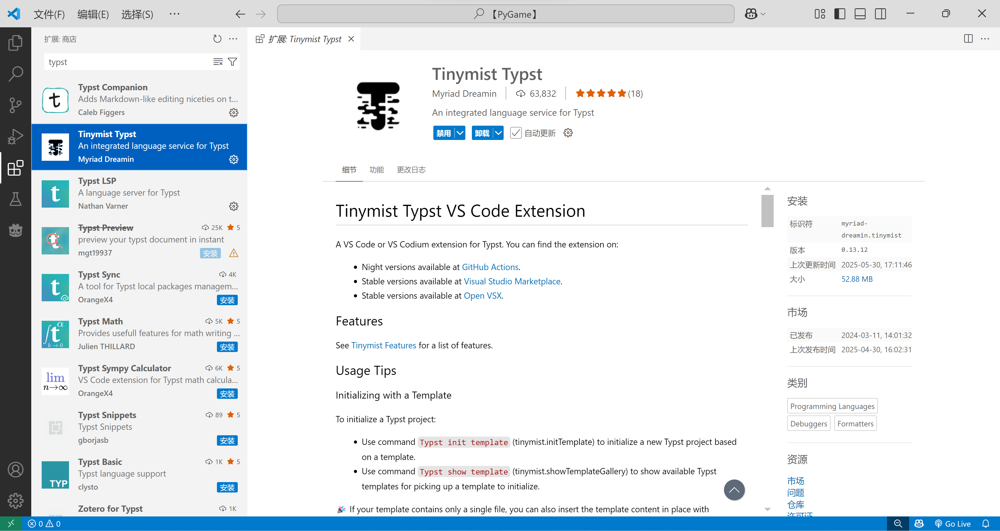
安装成功后，就可以在项目文件夹中，创建.pyt格式的文件，来编写Typst文档。
VSCode提供强大的语法提示和简便的文档预览。
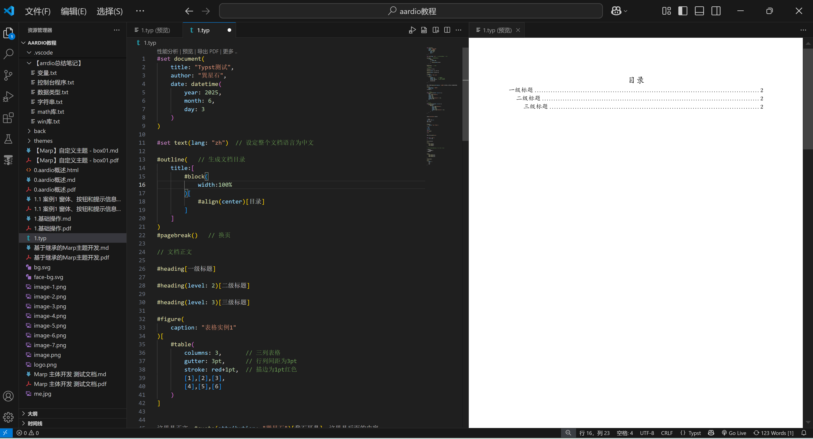
参考资料
作者
作者：巽星石
【Typst】2.Typst标记语法和基础样式
概述
本节介绍Typst的标记语法和基础样式。涉及主要的文档结构元素，包括段落、目录、表格、图片、链接、标签和引用，数学公式和代码块等等。
因为Typst只实现简单的标记语法，更多的使用脚本来控制文档元素和样式，所以本节难免遇到一些简单函数的使用。
系列目录
段落
和MarkDown类似，紧邻的两行内容将会被显示为一行。而且中间用一个空格连接：
这是一个段落
这是第二个段落
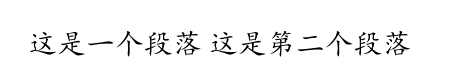
通过在文本行之间添加空行，两行内容就可以分别被识别为单独的段落。
这是一个段落
这是第二个段落
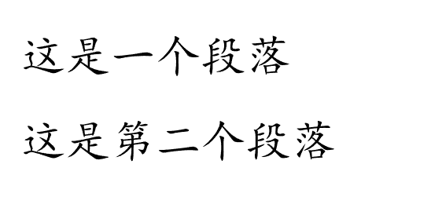
强制换行
通过在行末加\,可以插入一个强制换行：
这里是新的段落 \
这里是强制换行。
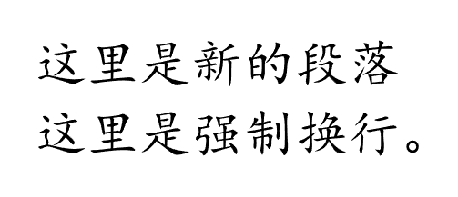
与空行法相比，强制换行只是把内容换行了，但是并不产生新的段落，所以可以看到行间距比较小。
标题
= 一级标题
== 二级标题
=== 三级标题
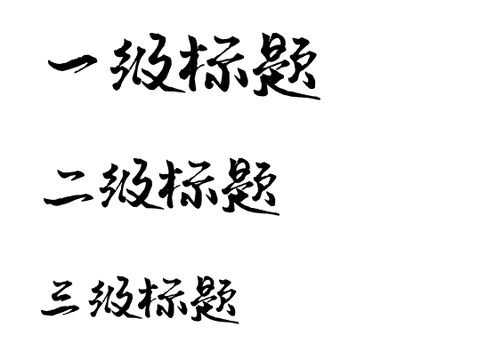
基础文字样式
*ABC* // 粗体，快捷键：Ctrl+B
#strong[ABC]
_AB_ // 斜体，快捷键：Ctrl+I
#emph[AB]
#underline[下划线] // 下划线，快捷键：Ctrl+U
#overline[上划线]
#strike[中划线（删除线）]
#underline(
offset: 1.5pt,
underline(offset: 3pt
)[双下划线])
#highlight[高亮]
#highlight(
fill: green,
stroke: black,
radius: 5pt,
)[高亮]
#text("简单文字")
#text(fill: red)[字色]
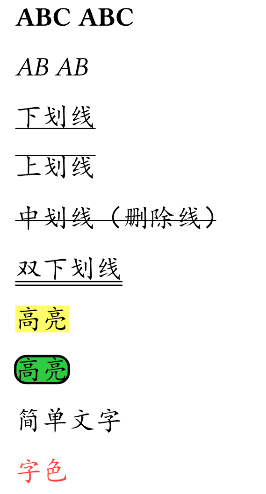
#strong[ABC]这样的事Typst的内置函数调用的简写法，它的完整写法是#strong()[ABC]。其中：
#开启脚本模式，代表后面为脚本strong为内置函数的函数名()内可以书写参数设置，默认参数可以缺省括号[]为内容块，里面书写内容
这里不懂的话也可以先略过，等学完脚本语法应该就能明白了。
上标和下标
22#super([2])
22#sub([2])
行内代码和代码块
这部分与MarkDown基本一样：
行内 `Ctrl+S`
```swift
func a():
print()
pass
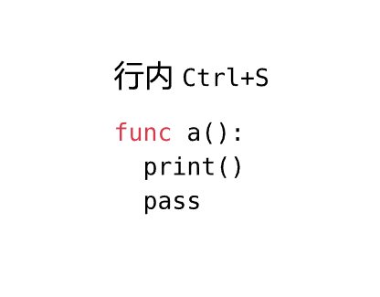
图片
简单图片插入
#image("1.png",width: 30%) // 直接插入图片
带标题的图片
// 带标题的图片
#figure(
image("1.png",width: 30%),
caption: "图片1"
)
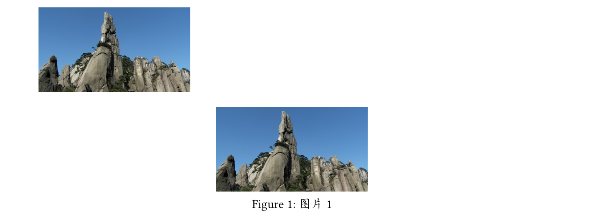
多图并列
这部分对初学者超纲，可以在学习完文档元素函数和布局函数之后，回来再看。
#align(
center, // 居中
stack(
dir: ltr, // 水平排列
spacing: 5pt,
figure(
image("1.png",width: 30%),
caption: "图片1"
),
figure(
image("1.png",width: 30%),
caption: "图片2"
),
figure(
image("1.png",width: 30%),
caption: "图片3"
)
)
)
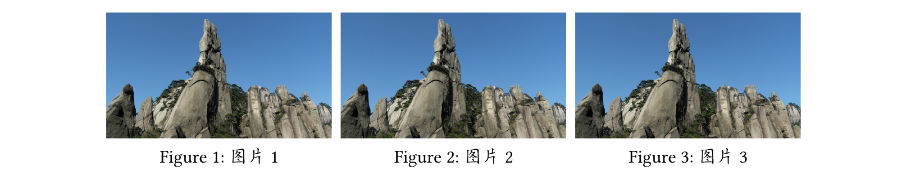
有序和无序列表
有序列表用+ 开头，无序列表用- 开头：
+ 有序列表项1
+ 有序列表项2
+ 有序列表项3
- 无序列表项1
- 无序列表项2
- 无序列表项3
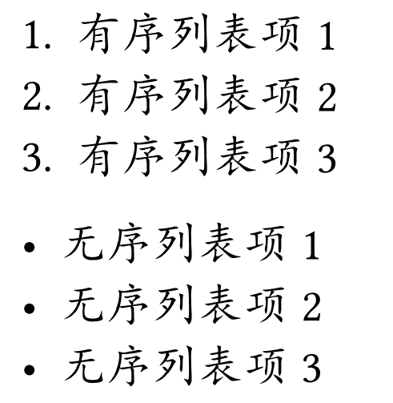
支持Tab缩进的层级形式：
+ 有序列表项1
+ 有序列表项2
+ 有序列表项3
- 无序列表项1
- 无序列表项2
- 无序列表项3
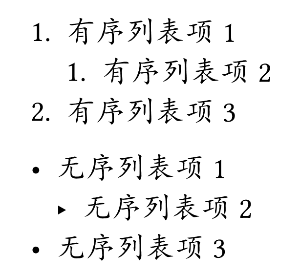
超链接
https://typst-doc-cn.github.io/
#link("https://typst-doc-cn.github.io/")
#link("https://typst-doc-cn.github.io/")[
Typst官方文档
]
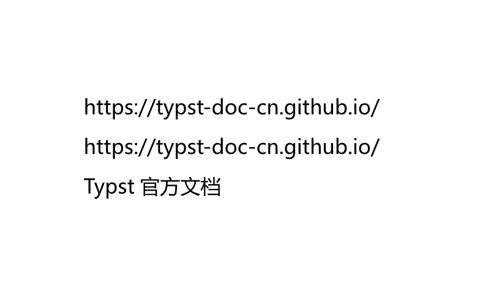
看起来像是普通文本，但是它是可以点击的。
修改显示样式：
#show link:underline
https://typst-doc-cn.github.io/
#link("https://typst-doc-cn.github.io/")
#link("https://typst-doc-cn.github.io/")[
Typst官方文档
]
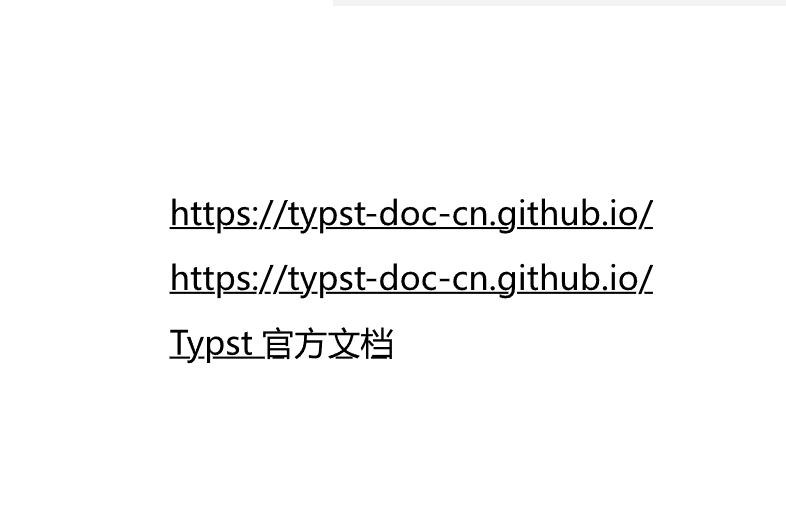
标签和引用
标签采用<标签名>或#label("标签名")形式，可以标记紧邻的前一元素。
这是一个段落。<a>
这是另一个段落。#label("b")
这还是另一个段落。
可以使用@标签名的形式进行引用。
#set heading(numbering: "1.")
= 第一个标题 <s1>
这是一段文本。@s1
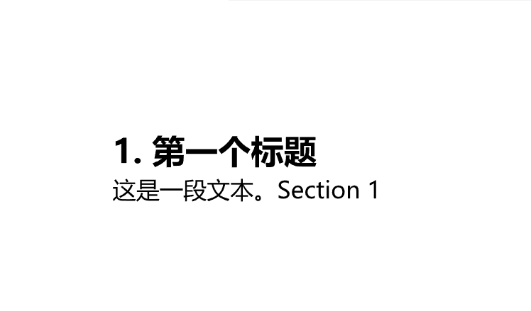
Section 1就是Typst自动生成的。点击后可以定位到标题。
数学公式
也支持行内公式和行间公式。行内公式用$符号紧密包裹，行间公式则用$ 和 $包裹，或者由单行的单行的$符号包裹：
行内数学公式：$a^2$
$ a^2 $
$
x^3
$
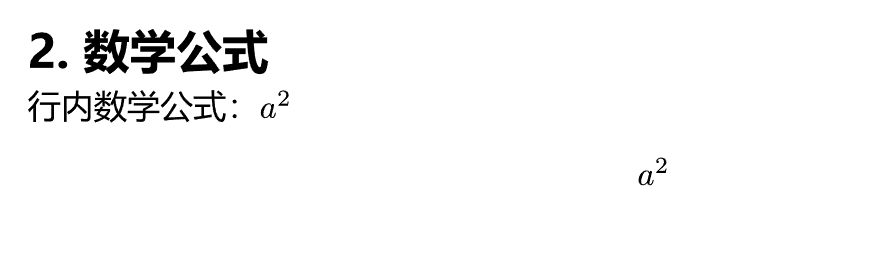
表格
表格采用函数table():
#table(
columns: (1fr,1fr,1fr),
[姓名],[性别],[年龄],
[张三],[男],[34],
[李四],[女],[36],
)
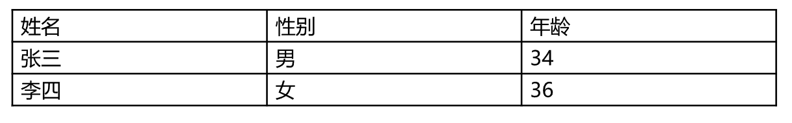
总结
本节只是简单介绍了一些基础的标记语法和文档元素的插入方法。涉及函数部分再学习完Typst脚本和文档结构函数、布局函数等内容后会变得更容易理解和使用，所以不必心急。
【Typst】3.Typst脚本语法
概述
Typst的核心就是它在标记语法的基础上提供了一个灵活强大的脚本语言，来支持复杂的排版操作。
本节就以一个脚本语言的角度，介绍一下Typst脚本的核心语法。
系列目录
字面量
// 字面量
#(2) // 整型字面量
#(3.14) // 浮点型字面量
#("你好") // 字符串字面量
#(true) // 布尔类型字面量
#(none) // 空字面量
类型判断
// 类型判断
#type(12) \ // int
#type(12.5) \ // float
#type(1>2) \ // bool
#type("hello") \ // str
#type(<glacier>) \ // label
#type([Hi]) \ // content
#type(x => x + 1) \ // function
#type(type) \ // type
#type(datetime.today()) \ // datetime
表达式
// 表达式
1+2*5 = #(1+2*5) // 1+2*5 = 11
#(1==2) // false
变量和函数
// 变量
#let a = 12 // 申明
#a // 12 // 使用
// 函数
#let add(a,b) = [#(a+b)] // 定义
#add(12,45) // 57 // 调用
#{
let str1 = [张三]
let str2 = [你好]
str1 + str2
}
控制语句
#for i in range(30,100) {
box(str(i),fill:blue) + " " + str.from-unicode(i) + "\n"
}

注释
// 单行注释
/*
多行注释
*/
数字
Typst包含两种数字类型，整型integer和浮点型float:
- 整型
integer：代表整数，可以是负数、零或正数。 由于 Typst 使用 64 位来存储整数，整数不能小于-9223372036854775808或大于9223372036854775807。 - 浮点型
float：一个实数的有限精度表示。Typst 使用 64 位来存储浮点数。
数字进制和科学计算法
// 数字进制
#(100) // 十进制100
#(0xFF) // 十六进制 = 255
#(0o77) // 八进制 = 63
#(0b11) // 二进制 = 3
// 科学计数法
#(6e2) // 600
#(2.3e5) // 230000
计算函数库calc
计算232的值：
#(calc.pow(2,32))
字符串
字符串可以看做是由若干字符按顺序组成的字符数组。
所有长度和索引都以 UTF-8 字符为单位。 索引从零开始，负索引会回到字符串的末尾。
string{
len() -> integer // 字符串在UTF-8编码字节中的长度
first() -> any // 返回字符串中第一个字符
last() -> any // 返回字符串中最后一个字符
at( // 返回定索引位置的字符
index：int, // 索引
default: any, // 超出索引范围后返回的默认值
) -> any
slice( // 截取子字符串
start:integer,
end:integer,
count: integer,
) -> string
clusters() -> array // 返回单个字符组成的数组
codepoints() -> array // 返回单个字符Unicode码组成的数组
contains(pattern:string/regex) -> boolean //判断字符串是否包含指定的模式
starts-with(pattern:string/regex) -> boolean //判断字符串是否以指定的模式开始
ends-with(pattern:string/regex) -> boolean //判断字符串是否以指定的模式结尾
find(pattern:string/regex) -> string/none // 在字符串中搜索指定的模式，并以字符串形式返回第一个匹配项，如果没有匹配项，则返回 none。
position(pattern:string/regex) -> integer/none //在字符串中搜索指定的模式，并返回第一个匹配项的索引，如果没有匹配项则返回 none。
match(pattern:string/regex) -> dictionary/none //在字符串中搜索指定的模式，并返回一个包含第一个匹配项详细信息的字典，如果没有匹配项则返回 none。
matches(pattern:string/regex) -> array 在字符串中搜索指定的模式，并返回一个包含所有匹配项详细信息的字典数组
value.replace( // 查找并替换匹配的字符串
pattern:string/regex, // 查找的字符串或模式
replacement:string/function, // 替换的内容或处理函数
count: integer, // 替换指定的前几项
) -> string
trim( // 从字符串的一侧或两侧移除匹配模式的内容，并返回替换结果
pattern:string/regex, // 查找的字符串或模式
at: alignment, // 可以使用 start 或 end 来仅修剪字符串的开头或结尾。如果省略，则会修剪字符串的两侧。
repeat: boolean, //决定是重复移除模式的匹配项还是只移除一次。默认为 true。
) -> string
split(pattern:string/regex) -> array // 按字符串或模式进行切分，返回数组
}
其中，match()和matches()方法的字典形式：
(
start: int, // 匹配项的起始偏移量
end:int, // 匹配项的结束偏移量
text: string // 匹配的文本
captures: array // 包含每个匹配的捕获组的字符串。 数组的第一项包含第一个匹配的捕获组，而不是整个匹配！除非 pattern 是带有捕获组的正则表达式，否则此项为空。
)
转义字符
// 转义字符
#("\"") // "
#("\\") // \
#("\n") // 换行
#("\r") // 回车
#("\t") // 制表符
#("\u{2665}") // unicode字符 ❤
基础用法
#("这是字符串") // 这是字符串
#("这是字符串" + "2") // 这是字符串2
#("这是字符串" + 2) // 【报错】
#("这是字符串" + str(2)) //这是字符串2
#("这是字符串，" * 2) // 这是字符串，这是字符串，
#let str1 = "这是字符串"
#str1.len() // 15
#("123".len()) // 3
#("abc".len()) // 3
#str1.at(0) // 这
#str1.clusters() // ("这", "是", "字", "符", "串")
#str1.codepoints() // ("这", "是", "字", "符", "串")
#(
"
第一行
第二行
第三行
".split("\r\n")
) // ("","第一行","第二行","第三行","")
特殊符号和表情符号
Typst提供了sym和emoji两个模块来辅助特殊字符和表情符号的书写。
#sym.eq // 等于
#sym.eq.not // 不等于
#sym.gt // 大于
#sym.gt.eq // 大于等于
#sym.gt.eq.not // 不大于等于
#sym.lt // 小于
#sym.lt.eq // 小于等于
#sym.lt.eq.not // 不小于等于

对于等于、大于、小于的缩写理解和记忆：
大于 greater than //gt
小于 less than //lt
等于 equal to //eq
#emoji.a
#emoji.alien
#emoji.face
#emoji.face.angry
#emoji.face.clown

// 单箭头
#sym.arrow
#sym.arrow.l
#sym.arrow.r
#sym.arrow.t
#sym.arrow.b
// 帽子
#sym.arrowhead
#sym.arrowhead.t
#sym.arrowhead.b
// 多箭头
#sym.arrows
#sym.arrows.ll
#sym.arrows.lll

数组和字典
数组
以下是Typst数组类型及其所有方法的总结：
array{
len() -> int // 数组的长度
first() -> any // 返回数组中的第一项
last() -> any // 返回数组中的最后一项
at( // 返回数组中指定索引位置的项
int, // 索引
default: any, // 默认值
) -> any
push(any) // 在数组末尾添加一个值。
pop() -> any // 从数组中移除并返回最后一个项
value.insert( // 在数组的指定索引位置插入一个值
int, // 插入位置
any, // 要插入的内容
)
remove(int) -> any // 删除指定位置的值并返回
value.slice( // 获取数组的切片
start:int, // 起始索引（包括在内）
end:int, // 结束索引（不包括在内）
count: inte, // 要提取的项数。
) -> array
contains(any) -> boolean //判断数组是否包含指定的值
/*-- 搜索 --*/
// 搜索给定函数
find(function) -> any/none // 返回true的第一项
position(function) -> int/none // 返回true的第一项的索引
filter(function) -> array // 返回true元素的新数组
map(function) -> array // 对所有元素操作后的新数组
enumerate() -> array // 返回(index,value)形式数组
zip(array) -> array // 合并数组
fold( // 使用累加器函数将所有项折叠成一个单一的值。
init:any, // 初始值
folder:function, // 折叠函数
) -> any
sum(default:any) -> any // 所有项求和（累加）
product(default:any) -> any // 累乘
any(function) -> boolean // 数组中任意一项满足函数条件
all(function) -> boolean // 数组中所有项满足函数条件
flatten() -> array //将所有嵌套数组合并为一个扁平的数组
rev() -> array // 返回逆序的新数组
join( // 将数组中的所有项合并为一个项
separator：any, // 分隔符
last: any, // 最后两项之间的替代分隔符
) -> any
sorted(function) -> array // 按函数规则排序后的数组
}
数组的基础用法
数组用括号包裹，以逗号分隔：
// 数组
#(1,2,3) // (1,2,3)
#("你好",12,[这里是内容]) // ("你好",12,[这里是内容])
像上面这样不用let申明数组变量，则直接原样输出。
#let arr2 = ("你好",12,[这里是内容]) // 申明数组变量
// 获取数组长度
#arr2.len() // 3
// 获取元素
#arr2.at(0) // 你好
#arr2.first() // 你好
#arr2.last() // 这里是内容
// 判断是否包含元素
#("你好" in arr2) // true
#arr2.contains("你好") // true
// 特殊方法
#arr2.enumerate() // ((0"你好"),(1,12),(2,[这里是内容]))
// 遍历
#for value in arr2 {
[#value]
}
因篇幅所限，以及与GDSCript获其他脚本语言的类似性，这里不赘述其他数组方法的示例。
不声明变量直接调用方法也是可以的：
#(1,2,3).at(0) // 1
字典
dictionary{
len() -> integer // 字典中键值对的数量
at(key:string,default: any,) -> any // 获取指定键的值
insert(key:string,value:any,) // 插入新的键值对到字典
remove(key:string) -> any // 从字典删除指定键的键值对
keys() -> array // 字典中所有键组成的数组（按插入顺序）
values() -> array // 字典中所有值组成的数组（按插入顺序）
pairs() -> array // 键值对组成的数组（按插入顺序）
}
// 申明字典变量
#let dic = (
name:"张三",
sex:"男",
age:12
)
// 获取字典键值对个数
#dic.len() // 3
// 获取元素
#dic.at("name") // 张三
#dic.name // 张三
// 获取键获值的数组
#dic.keys() // ("name","sex","age")
#dic.values() // ("张三","男",12)
// 特殊
#dic.pairs() // (("name","张三"),("sex","男"),("age",12))
数组与字典的解构赋值
//申明一个字典
#let pp = (
name:"张三",
sex:"男",
age:45
)
//解构赋值
#let (name,sex,age) = pp
//输出成员
#name
#sex
#age

可以看到所谓解构赋值，就是一次性批量申明变量，然后对应字典或数组的元素。
日期时间
datetime的方法
datetime{
display(pattern:string) -> string // 给定格式显示日期时间
year() -> integer/none // 返回日期时间中的年，不存在返回none
month() -> integer/none // 返回日期时间中的月，不存在返回none
day() -> integer/none // 返回日期时间中的日，不存在返回none
weekday() -> integer/none // 返回日期时间的周几数字，不存在返回none
hour() -> integer/none // 返回日期时间中的小时，不存在返回none
minute() -> integer/none // 返回日期时间中的分钟，不存在返回none
second() -> integer/none // 返回日期时间中的秒数，不存在返回none
}
datetime的构造
日期时间类型可以使用datetime()函数构造，可以看做是datetime类型的构造函数：
datetime(
year： //年份
month： //月份
day： //日期
week_number： //周数
weekday： //星期
hour： //小时
minute： //分钟
second： //秒数
)
你可以指定其中的全部或部分。
// 构造日期
#let date = datetime(
year: 2025, // 年
month: 6, // 月
day: 1 // 日
)
// 构造时间
#let time = datetime(
hour: 15, // 时
minute: 27, // 分
second: 57 // 秒
)
datetime的显示
直接调用变量并不会显示日期时间，而需要用datetime的display()方法：
#date // datetime( year: 2025, month: 6, day: 1)
#time // datetime( hour: 15, minute: 27, second: 57)
#date.display() // 2025-06-01
#time.display() // 15:27:57
#date_time.display() // 2025-06-01 15:27:57
display()方法采用默认显示格式：
- 如果只指定了日期，格式为
[year]-[month]-[day]。 - 如果只指定了时间，格式为
[hour]:[minute]:[second]。 -
- 如果你同时指定了日期和时间，格式为
[year]-[month]-[day] [hour]:[minute]:[second]。 可以在display()方法中传入自定义的显示格式：
- 如果你同时指定了日期和时间，格式为
#date.display("[year]年[month]月[day]日") // 2025年06月01日
还可以设定显示参数：
#date.display("[year repr:last_two]年[month]月[day]日") // 25年06月01日
通用参数
year、month、day、hour、minute和second，week_number，都可以指定padding参数：
| 参数 | 作用 | 可选值 |
|---|---|---|
| padding | 指定填充方式 | zero：默认，位数不够前面补零space ：位数不够前面补空格none：位数不够不补零 |
#date.display("[year]年[month padding:none]月[day padding:none]日") // 2025年6月1日
#date.display("[year]年[month padding:zero]月[day padding:zero]日") // 25年06月01日
#date.display("[year]年[month padding:space]月[day padding:space]日") // 2025年 6月 1日
year的参数
| 参数 | 作用 | 可选值 |
|---|---|---|
| repr | full显示完整年份last_two只显示最后两位 | |
| sign | 指定何时显示符号。 | automatic mandatory |
month的参数
| 参数 | 作用 | 可选值 |
|---|---|---|
| repr | 指定月份是否以数字或单词形式显示。 不幸的是，选择单词表示时，目前仅能显示英文版本。未来计划支持本地化 | numerical long short |
hour的参数
| 参数 | 作用 | 可选值 |
|---|---|---|
| repr | 决定小时以 24 小时制还是 12 小时制显示 | 2424小时制1212小时制 |
week_number的参数
| 参数 | 作用 | 可选值 |
|---|---|---|
| repr | 周数范围 | ISO周数范围为 1 至 53 sunday 周数范围为 0 至 53monday周数范围为 0 至 53 |
weekday的参数
| 参数 | 作用 | 可选值 |
|---|---|---|
| repr | 。 对于 long 和 short，会显示相应的英文名称（与月份类似，目前不支持其他语言）。 对于 sunday 和 monday，将显示数字值（分别假设星期日和星期一为一周的第一天）。 | long星期几的英文名称short星期几的英文名称sunday星期几的数字值（以星期日为每周第一天）monday星期几的数字值（以星期一为每周第一天） |
| one_indexed | 设定周的数值表示从 0 还是 1 开始。 | true 或 false。 |
period的参数
| 参数 | 作用 | 可选值 |
|---|---|---|
| case | 定义时间段的大小写显示。 | lower 或 upper。 |
04导入、包含和读取
概述
上节概述了Typst脚本的基础语法，在此基础上，本节介绍Typst文件的导入、包含和读取的内容。你将可以更简单灵活的组织你的文件内容。
系列目录
导入模块
使用import语句可以导入自定义模块或Typst内部模块
import "bar.typ" // 将bar.typ作为模块导入
import "bar.typ" as baz // 将bar.typ作为模块导入,重命名为baz
import "bar.typ": a,b // 将bar.typ作为模块导入,引入其中定义的a和b变量
import "bar.typ":a as one,b as two // 重命名引入的a和b变量
import "bar.typ": * // 导入bar.typ中的所有变量
导入包
import除了导入模块外，也可以用于导入自己或第三方的包。
#import "@preview/cmarker:0.1.0"
关于第三包的使用将专门一节讲解。
导入模板
import还可以用于导入模板。
模板可以看做是特殊的Typst脚本文件，用于统一定制页面的格式，并调用生成相同风格的文档。
关于创建和导入模板见后节。
包含文件内容
可以使用include语句包含其他.typ文件的内容到当前文件。对于大体量的书写，可以将内容分散到不同的.typ文件中，然后在主文件中包含和排序，方便管理。
关于导入和包含以及一个成熟的Typst排版架构见下图：
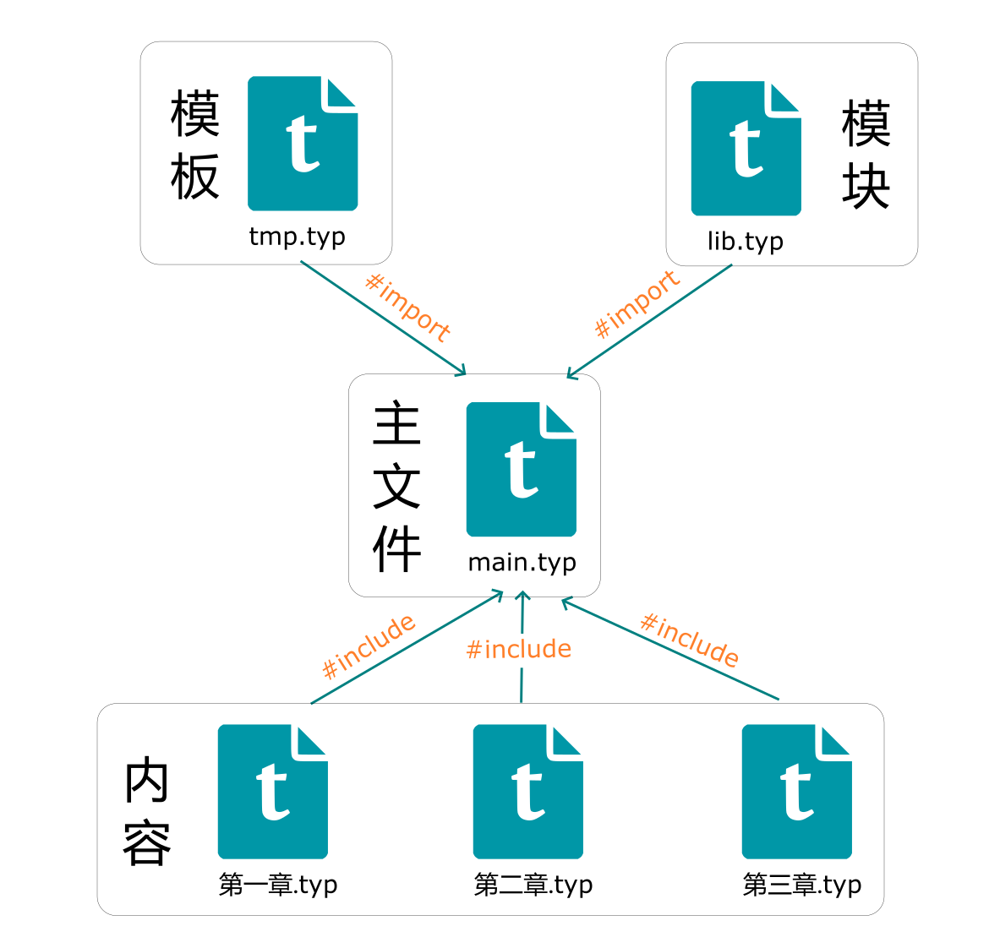
- 模板中定义基础的页面、段落等样式，以及文档的基本结构，比如封面、目录
- 所谓“模块”可以看作是一个自定义函数库，通过编写函数，你可以更方便的输出一些内容
- 主文件负责内容的管理：包括模板的使用，库的导入，以及管理章节的之间的顺序等等
- 通过将内容划分为章节，可以获得更好的写作体验。
读取并显示文件内容
使用read()函数，可以读取任意文件内容，默认以字符串形式读取。
这意味着你不仅可以在.typ文件中通过include()包含其他.typ文件，也可以用read()读取任意纯文本文件，比如MarkDown、HTML等等。
读取和显示MarkDown的内容
在Typst项目目录下创建“x.md”，内容如下：
# 这是MarkDown的内容
你可以看到它被正常的引入。#rect()
在Typst中使用read()函数读取并显示
#let md = read("x.md")//读取
#rect(md)
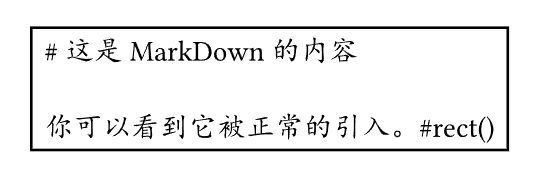
可以看到MarkDown中的内容会被原样输出，而不会处理类似typst语法的内容。
读取csv文件并用表格显示
读取csv文件不需要使用read()函数，直接使用csv()即可：
“a.csv”的内容如下：
张三,男,45
张三,男,45
张三,男,45
#csv("a.csv")
显示：
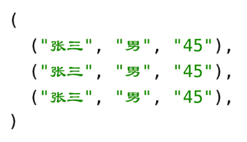
可以看到内容就是一个二维数组。
用表格显示：
#let data = csv("a.csv")
#table(columns: 3,..data.flatten())
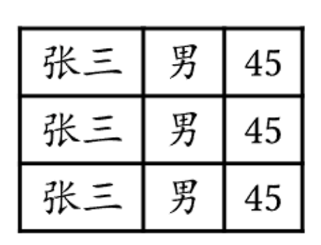
读取JSON文件
JSON文件也可以直接使用json()函数读取：
“b.json”内容如下：
{
"title":"JSON测试",
"author":"巽星石"
}
#json("b.json")
显示：
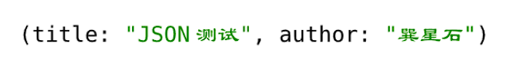
可以看到内容被转化为字典。因此也就可以直接通过字典的语法获取对应键的值：
#let data = json("33.json")
#data.title \
#data.author
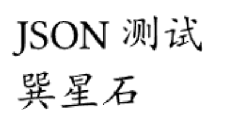
【Typst】5.文档结构元素与函数
概述
本节介绍Typst文档的核心文档结构元素及其对应函数，还有函数的用法。通过本节你将可以更好的使用脚本创建和控制页面元素。
set语句和show语句
set语句
set语句用于自定义文档元素的外观。
顶层 set 规则一直作用到文件结束，块内的set 规则只作用到块结束。
#set 文档元素函数(选项:值)
#set 文档元素函数(选项:值) if 条件
show语句
show 规则可以深度定制特定类型文档元素的外观。
与 set 规则类似， show 规则也一直作用到文档或者当前块的结束。
最常用的基本形式是 show-set 规则：
#show 文档元素选择器:... // 整个元素
#show 文档元素选择器.where(属性：值):... // 符合属性值条件的元素
#show 文档元素选择器: set 函数(选项) // show-set 形式
#show 文档元素选择器: 函数 // show-函数 形式
#show "文本内容":... // 设定全文中指定文本内容的样式
#show regex("\w+"): ... // 设定匹配正则表达式的文本
#show heading: set text(blue) // 将所有标题设为蓝色
// show-函数 形式，将标题设置为矩形外框
#show heading: it => rect[
#it.body
]
= 标题
#show "巽星石":set text(red)
作者巽星石，巽星石是个二百五。

#show heading.where(level: 1):set text(blue)
with()
#let err = rect.with(fill:red)
#err[警告]

文档document()
document()代表整个文档，是文档的根元素。其包含参数定义如下：
document(
title: none content, // 文档的标题，作为PDF阅读器的窗口标题
author: str array, // 文档的作者
keywords: str array, // 文档的关键词
date: none auto datetime, // 文档的创建日期
) -> content
不能在文档中用document()再创建文档元素，只能用set语法对其进行设置。
#set document(
title: "Typst测试",
author: "巽星石",
date: datetime(
year: 2025,
month: 6,
day: 3
)
)
页面page()
page()函数代表页面元素，其参数包含对页面的设置。下面是它的完整参数定义：
page(
paper: str, // 标准纸张大小,默认："a4"
width: auto length, // 页面宽度
height: auto length, // 页面高度
flipped: bool, // 页面是否翻转为横向，默认：false
margin: auto relative dictionary, // 页面的边距
binding: auto alignment, // 页面的装订边？
columns: int, // 页面内容分栏数
fill: none color gradient pattern, // 页面背景色
numbering: none str function, // 页码格式
number-align: alignment, // 页码对齐方式，默认：center + bottom
header: none content, // 页眉内容
header-ascent: relative, // 标题被提升到上边距的数量,默认：30%
footer: none content, // 页脚内容
footer-descent: relative, // 页脚降低到下边距中的量，默认：30%
background: none content, // 页面背景内容，图片、文字水印等
foreground: none content, // 前景内容，覆盖在页面正文之上
content, // 页面的内容
) -> content
两种用法
#set page()：统一设置页面#page()：直接创建页面
// 统一设置页面
#set page(
width:10cm,height:6cm, // 页面宽高
margin: (4mm) // 统一边距
)
// 用填充矩形展示版心
#rect(
fill: rgb("#75c5ea"),
width: 100%,
height:100%
)
#pagebreak() // 强制换页
#set page()之后会自动新开一页，其作用一直延续到后续页面，包括用#pagebreak()强制换页。
margin可以详细进行设置：
margin: (
top：length, // 上边距
right：length, // 右边距
bottom：length, // 下边距
left：length, // 左边距
inside：length, // 页面内侧的边距
outsidelength,： // 页面外侧的边距
x：length, // 水平边距
y：length, // 垂直外边距
rest：length, // 除字典明确设置大小的边外，所有边的边距
)
#set page(
width:10cm,height:6cm, // 页面宽高
margin: ( // 页面边距
x:10mm, // 水平边距
y:2mm, // 垂直边距
)
)
// 用填充矩形展示版心
#rect(
fill: rgb("#75c5ea"),
width: 100%,
height:100%
)
#pagebreak() // 强制换页

直接创建页面
page()函数直接使用，可以创建页面元素：
// 直接创建新页面
#page(
paper: "a4",
margin: 2cm,
[这是新页面]
)
上面的代码：
- 在代码位置创建新的A4页面，设定边距为2cm
- 页面内容为“这是新页面”
强制分页
pagebreak()函数用于强制分页。
pagebreak(
weak: bool,
to: nonestr,
) -> content
一般直接以如下形式使用：
#pagebreak()
段落par()
par()函数代表文本段落元素，其参数包含对文本段落的设置选项。下面是它的完整参数定义：
par(
leading: length, // 行间距，默认：0.65em
justify: bool, // 是否在其行中对齐文本，默认：false
linebreaks: auto str, // 设定如何换行，默认：auto 为两端对齐
first-line-indent: length, // 首行缩进值，默认：0pt
hanging-indent: length, // 除首行外其他行的缩进值，默认：0pt
body:content, // 段落的内容
) -> content
设定段落样式
#set par(
first-line-indent: 2em,
hanging-indent: 3em,
leading: 1.5em
)
可以看到，光用set语句设定会显得比较局促。因为无法设置字体、字号、字色等等的细节，所以还得使用show...set形式补充设定：
// 对段落的一般设置
#set par(
first-line-indent: 2em,
hanging-indent: 3em,
leading: 1.5em
)
// 对段落的详细设置
#show par:set text(blue) // 设定段落的文本颜色
// 进一步的设定
#show par:set text(
font: "Microsoft YaHei",
size: 20pt,
fill: red
)
创建段落
par()函数也可以向page()函数一样用来生成段落元素：
#par[这是一个新的段落]
#par(first-line-indent: 2em)[
生成的段落
]
标题heading(）
heading(
level: int, // 标题级别，默认：1
numbering: nonestr function, // 设定标题的编号模式
supplement: none auto content function,
outlined: bool, // 标题是否显示在目录中，默认：true
bookmarked: auto bool, // 标题是否在导出PDF中显示为书签
body:content, // 标题内容
) -> content
设置标题样式
最常见的就是设定标题的编号模式
#set heading(numbering: "1.a")
= 第一章
== 第一节
=== 第一小节

创建标题
#heading[一级标题]
#heading(level: 2)[二级标题]
#heading(level: 3)[三级标题]

其他页面元素
有了page()和par()和heading()的经验，其他文档元素函数的用法大致类似，一个是用来设定文档元素的样式，一个是用来创建文档元素的实例。
目录outline()
outline()函数用于生成整个文档或者图表等其他元素的目录。
outline(
title: none auto content, // 目录标题
target: label selector function, // 目录所对应的文档元素，默认：heading.where(outlined: true)
depth: none int, // 目录深度，最大标题级别
indent: none auto bool relative function, // 缩进
fill: none content, // 条目和页码之间的填充，默认：repeat(body: [.])
) -> content
#outline() // 生成文档目录
#pagebreak() // 换页
// 文档正文
#heading[一级标题]
#heading(level: 2)[二级标题]
#heading(level: 3)[三级标题]

可以看到目录的默认标题为英文的“Contents”,通过设定text()函数的语言选项为中文，目录标题将自动切换为中文的“目录”。其他语言类似。
#set text(lang: "zh") // 设定整个文档语言为中文
#outline() // 生成文档目录
#pagebreak() // 换页
// 文档正文
#heading[一级标题]
#heading(level: 2)[二级标题]
#heading(level: 3)[三级标题]

或者可以直接设定outline()的title属性。并可以基于内容块形式设定居中。
#outline( // 生成文档目录
title:[
#block(
width:100%
)[
#align(center)[目录]
]
]
)

引用quote(）
quote(
block: bool, // 是否为块引用，默认：false
quotes: auto bool, // 是否为引用内容添加双引号，默认：auto，行内添加，块级不添加
attribution: none label content, // 引文的署名，通常是作者或来源。
body:content, // 引文内容
) -> content
Typst将引用分为“行内引用”和“块级引用”。
这里是正文，#quote(attribution: "巽星石")[我石耳鼻]，这里是后面的内容。
#quote(
attribution: "巽星石",
block: true // 设为块级引用
)[我石耳鼻]

脚注
footnote()用于创建脚注，脚注会在每页页脚区域自动编号并显示脚注内容。
footnote(
numbering: str function, // 脚注的编号形式
body:label content, // 脚注内容
) -> content
日常使用时，脚注只需要使用#footnote[脚注内容]形式添加到正文任意位置即可：
#page(
width: 8cm,height: 5cm
)[
这里是脚注的示例#footnote[这里是脚注的内容]
]
为了演示的方便，这里建了一个宽8cm，高5cm的小页面进行演示：

自定义脚注列表
可以在文档的开头定义 footnote.entry 的 set 和 show 规则，对脚注的条目样式进行统一设置。
footnote.entry(
note:content,
separator: content, // 文档正文和脚注列表之间的分隔符，默认：1em
clearance: length, // 文档正文和分隔符之间的间距，默认：0.5em
gap: length, // 脚注条目之间的间距，默认：0.5em
indent: length, // 脚注条目的缩进量，默认：1em
) -> content
标签label()和引用site()
标签可以使用<标签名>或#label("标签名")形式创建，需要添加到标记元素的后面，且紧邻。
#figure(
caption: "typ:标记模式",
)[
```typ
= 123
== 234
=== 456
`123`
#set page()
]
这里是引用：#ref()

## 无序列表list()
```swift
list(
tight: bool, // 列表项是否紧凑排列，默认：true
marker: content array function, // 列表项的标记
indent: length, // 列表项的缩进值，默认：0pt
body-indent: length, // 标记与列表项正文之间的间距，默认：0.5em
spacing: auto relative fraction, // 宽（非紧密）列表的项之间的间距
children: content, // 具体的列表项
) -> content
list.item(
content
) -> content
// 使用for循环创建列表
#for zm in "ABC" [
- 字母 #zm
]

// 使用list()函数设定
#list[1][2][3]

// 使用 list.item 设定
#list(
list.item[1],
list.item[2],
list.item[3]
)

有序列表enum()
enum(
tight: bool, // 列表项是否紧凑排列，默认：true
numbering: str function, // 设置编号的模式，默认："1."
start: int, // 开始编号，默认：1
full: bool, // 是否显示完整编号，包括父列表的编号
indent: length, // 列表项的缩进值，默认：0pt
body-indent: length, // 标记与列表项正文之间的间距，默认：0.5em
spacing: auto relative fraction, // 宽（非紧密）列表的项之间的间距
number-align: alignment, // 编号的对齐方式，默认：end + top
children：content array, // 具体的列表项
) -> content
enum.item(
number: none int, // 编号
body: content, // 内容
) -> content
+ 列表项1
+ 列表项1.1
+ 列表项2

#enum(
enum.item(1)[1],
enum.item(2)[2],
enum.item(3)[3],
)

#enum[1][2][3]

#enum(
start: 3
)[1][2][3]
或者：
#enum(
start: 3,
[1],
[2],
[3]
)

#set enum(numbering: "1.a",full: true)
+ 列表项1
+ 列表项1.1
+ 列表项2

图片image()
image(
path:str, // 图片文件路径
format: auto str, // 图片格式
width: auto relative, // 图片宽度，默认：aoto
height: auto relative, // 图片高度，默认：aoto
alt: nonestr, // 图片描述
fit: str, // 图片的自适应方式，默认："cover"
) -> content
image.decode(
data:str bytes, // 要解码为图像的数据,可以是SVG的字符串
format: auto str, // 图片格式
width: auto relative, // 图片宽度，默认：aoto
height: auto relative, // 图片高度，默认：aoto
alt: nonestr, // 图片描述
fit: str, // 图片的自适应方式，默认："cover"
) -> content
fit的值：
| fit值 | 描述 |
|---|---|
| “cover” | 图像应完全覆盖该区域。这是默认设置。 |
| “contain” | 图像应完全包含在该区域中。 |
| “stretch” | 应拉伸图像，使其完全填充该区域，即使这意味着图像将失真。 |
代码raw()
raw()代表可以进行语法高亮或背景高亮的行内代码或代码块。
raw(
text:str, // 代码内容
block: bool, // 是否为代码块，默认：false
lang: none str, // 代码语言
align: alignment, // 代码块内容的对齐方式，默认：start
syntaxes: str array, // 语法定义
theme: none str, // 用于语法高亮的主题，默认：none
tab-size: int, // 一个Tab键等于的空格数，默认：2
) -> content
```html
<h1>这里是H1</h1>
<hr>
这里是正文
typ和typc
Typst的代码可以使用typ或typc作为其语言名称。其中：
typ为标记模式typc为脚本模式
```typ
= 123
== 234
=== 456
`123`
#set page()
```
```typc
= 123
== 234
=== 456
`123`
#set page()
```
两者在显示标记和Typst脚本上有所差别：

为代码添加标题
代码块也可以包裹在figure()中，并为其创建计数和标题。
#figure(
caption: "typ:标记模式"
)[
```typ
= 123
== 234
=== 456
`123`
#set page()
```
和图片以及表格一样，包裹figure()后，内容就会在行中居中显示：

设定行内代码和代码块的样式
下面是我自己琢磨出来的样式：
// 行内代码
#show raw.where(block: false):it =>[
#box(
fill: rgb("#ececec"),
inset: 2pt,
outset: 2pt,
radius: 2pt,
stroke: rgb("#dcdcdc") + 1pt,
baseline: 20%,
it
)
]
// 代码块
#show raw.where(block: true):it =>[
#align(left)[
#block(
fill: rgb("#ececec"),
width:100%,
inset: 10pt,
radius: 5pt,
stroke: rgb("#dcdcdc") + 1pt,
it
)
]
]
实际效果还可以：

代码行样式设定
文档没有示例，不太清楚具体的设定方法。
raw.line(
number:int, // 行号（从1开始）
count:int, // 代码块中的总行数
text:str, // 文本
content, // 高亮显示的原始文本
) -> content
表格table(）
table(
columns: auto int relative fraction array, // 列数或列设置
rows: auto int relative fraction array, // 行数或行设置
gutter: auto int relative fraction array, // 行和列间隙
column-gutter: auto int relative fraction array, // 行间隙
row-gutter: auto int relative fraction array, // 列间隙
fill: none color gradient array pattern function, // 单元格填充
align: auto array alignment function, // 单元格内容对齐方式
stroke: none length color gradient stroke pattern dictionary, // 边框样式，默认：1pt + black
inset: relative dictionary, // 内边距 默认：5pt
children：content, // 具体表格数据
) -> content
#table(
columns: 3,
[1],[2],[3],
[4],[5],[6]
)

#table(
columns: 3, // 三列表格
gutter: 3pt, // 行列间距为3pt
stroke: red+1pt, // 描边为1pt红色
[1],[2],[3],
[4],[5],[6]
)

图表figure()
figure()主要用于对图片、表格或者其他内容进行标记，并自动创建序号，并且可以设定标题等。
figure(
body:content, // 内容，通常为图片、表格
placement: none auto alignment, // 图片在页面上的放置位置，默认：none
caption: none content, // 标题，默认：none
kind: auto str function, // 图表的种类，相同类型共用一个计数器
supplement: none auto content function, // 和序号标题一起显示的图表类型名称
numbering: none str function,
gap: length,
outlined: bool,
) -> content
#figure(
caption: "表格实例1"
)[
#table(
columns: 3, // 三列表格
gutter: 3pt, // 行列间距为3pt
stroke: red+1pt, // 描边为1pt红色
[1],[2],[3],
[4],[5],[6]
)
]
figure()的标题默认会以“图表的类型名 类型计数：标题”形式展示。

可以通过supplement参数指定中文形式，或者通过设定整个文档的语言为中文，实现自动的中文类型名。
#set text(lang: "zh") // 设定整个文档语言为中文

中文随机内容的填充
通过lorem()可以创建用于暂时填充的英文文本，但是有些时候，我们跟多的需要填充中文内容我们可以利用字符串的特性，给一个字符串乘以一个倍数来重复它：
#("这是一段用作填充的文字。" *5)

我们可以简单的编写一个函数来重复调用。
#let lorem_zh(time) = {"这是一段用作填充的文字。" * time}
#lorem_zh(5)
【Typst】6.布局函数
概述
上节我们介绍了文档结构元素的函数，本节介绍一些控制布局使用的函数，掌握他们之后你可以更进一步的控制页面元素的布局。
提示
- 在学习布局函数之前可以先学习一下一文，明确Typst支持的长度、分数、比例等，方便实际布局中使用。
- 此文已于2025年6月29日重新更新内容
绝对定位place()
place()用于将内容放置在父容器（页面）的指定位置。
place(
alignment: auto alignment, // 位置，默认：start
float: bool, // 是否浮动布局，默认：false
clearance: length, // 放置的元素在浮动布局中的间隙量。默认：1.5em
dx: relative, // 水平偏移
dy: relative, // 垂直偏移
content, // 定位的内容
) -> content
设定放置位置
alignment可能的值为：
-
start：在文本方向的开头对齐。 -
end：在文本方向的末尾对齐。 -
left：左对齐。 -
center：水平居中。 -
right：右对齐。 -
top：垂直顶部对齐。 -
horizon：垂直居中对齐。 -
bottom：在底部对齐。
alignment指定相对于父容器中的哪个位置放置内容。
- 如果
float是false，那么可以是除auto之外的对齐方式。 - 如果
float是true，那么必须是auto、top或bottom。
#rect(width:100%,height: 200pt)[
#place(start)[top/start]
#place(center)[center]
#place(right)[right/end]
#place(horizon)[horizon]
#place(center+horizon)[center+horizon]
#place(right+horizon)[right(/end)+horizon]
#place(bottom)[bottom]
#place(bottom+center)[bottom+center]
#place(bottom+right)[bottom+right(/end)]
]
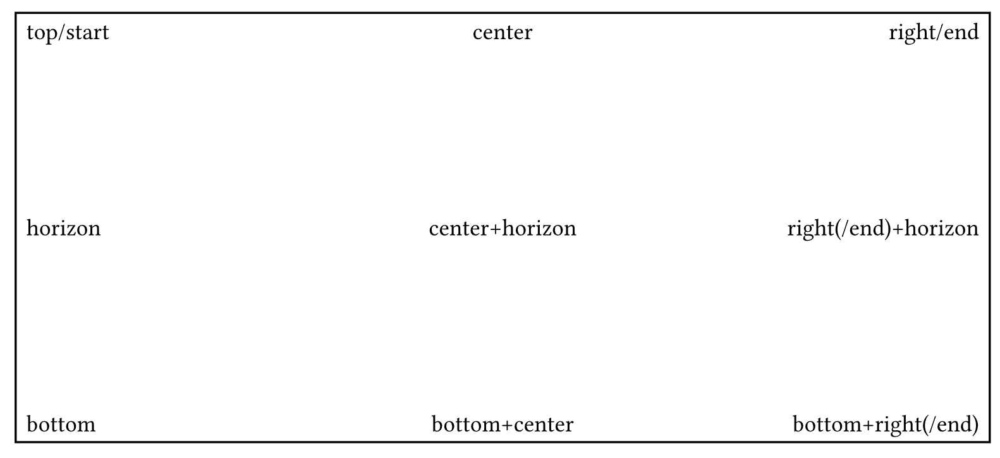
设定浮动和scope
默认情况下，place()定位的内容已经脱离了文档流式布局，它们会按先后顺序和内容重叠。
#set page(columns: 2)
#place(
top + center,
rect(width: 100%, height: 100pt, fill: aqua),
)
#lorem(400)
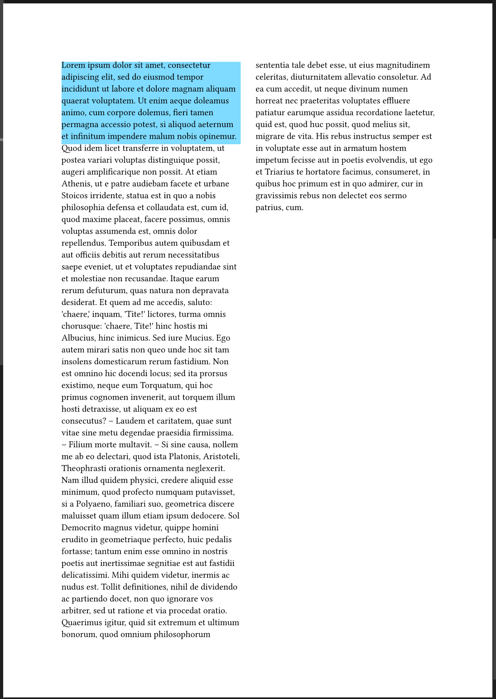
开启浮动后，place()定位的内容会占据其所在的位置。
#set page(columns: 2)
#place(
top + center,
float: true, // 开启浮动
rect(width: 100%, height: 100pt, fill: aqua),
)
#lorem(400)
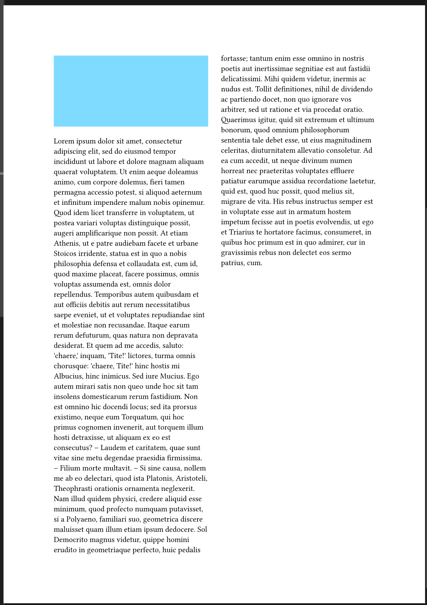
scope的默认值是"column"，如果页面级别设定了分栏，则绝对定位的内容会显示在当前栏内。
| 值 | 含义 |
|---|---|
"column" | 放置到当前列中。 |
"parent" | 相对于父元素定位，允许内容跨越所有列。需要启用float。 |
通过将scope的值设为"parent"，可以实现跨栏效果。
#set page(columns: 2)
#place(
top + center,
scope: "parent",
float: true,
rect(width: 100%, height: 100pt, fill: aqua),
)
#lorem(400)
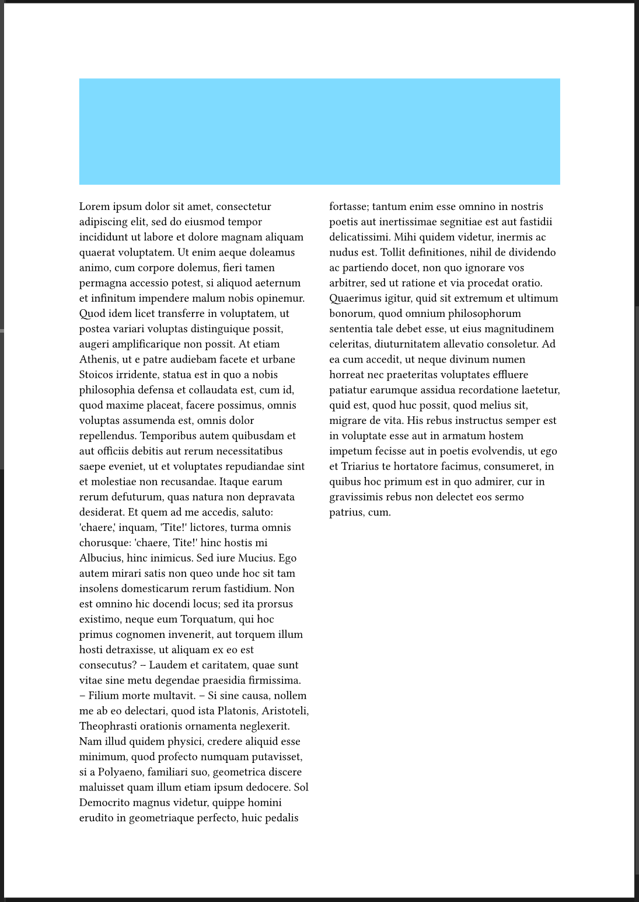
clearance可以设定浮动内容与周围内容的间距。
#set page(columns: 2)
#place(
top + center,
scope: "parent",
float: true,
clearance: 3em,
rect(width: 100%, height: 100pt, fill: aqua),
)
#lorem(400)
设定偏移值
在指定alignment的基础之上，可以使用dx和dy设定偏移值。
#rect(width:100%,height: 200pt)[
#place(start,dx:2cm,dy:1cm)[top/start + (2cm,1cm)]
#place(center+horizon,dx:2cm,dy:1cm)[center+horizon + (2cm,1cm)]
#place(bottom+right,dx:-2cm,dy:-1cm)[bottom+right(/end)- (2cm,1cm)]
]
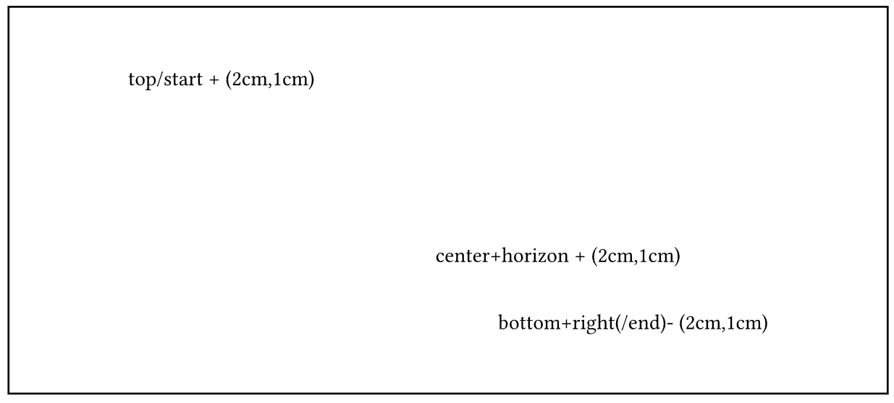
#page(height: 200pt)[
#lorem(150)
#figure(
rect(width: 100%, height: 50pt),
placement: auto,
caption: [A rectangle],
)
This text appears after the figure.
]
place.flush()
<font style="color:rgb(25, 24, 31);background-color:rgb(253, 253, 253);">place.flush()</font>指示布局算法在继续处理内容之前先放置待处理的浮动元素。
这有助于防止浮动图片溢出到下一节。
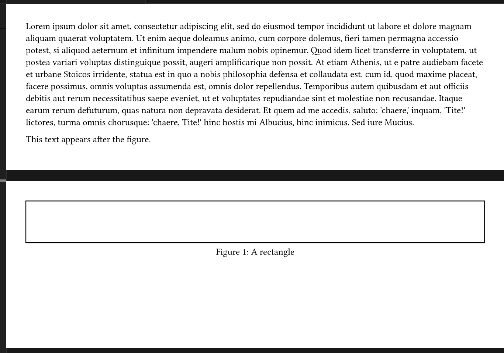
#page(height: 200pt)[
#lorem(150)
#figure(
rect(width: 100%, height: 50pt),
placement: auto,
caption: [A rectangle],
)
#place.flush()
This text appears after the figure.
]
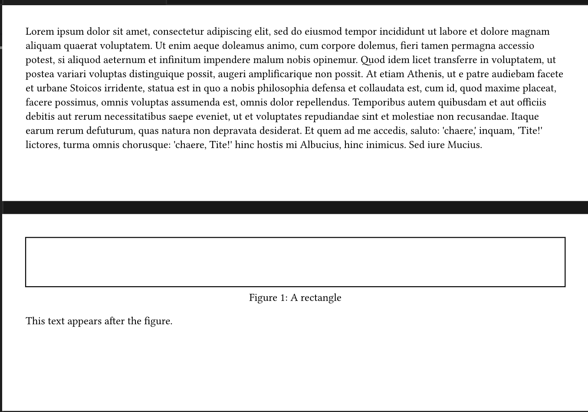
对齐align()
align()和place()很像，都是基于设定alignment，来定位内容的位置- 不过
align()只涉及元素的定位，但不会脱离文档流
align(
alignment, // 沿两个轴的对齐方式。默认：start + top
content, // 要对齐的内容。
) -> content
整体使用：
#set align(center)
这是第一段 \
这是第二段 \
这是第三段 \
局部使用：
#align(left)[左对齐]
#align(center)[居中对齐]
#align(right)[右对齐]
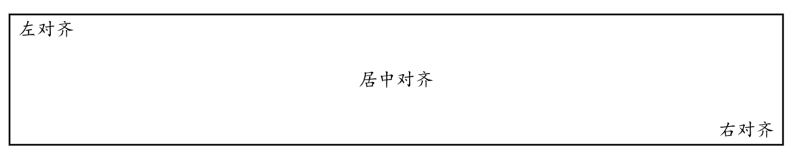
在容器中使用：
#rect(
width: 100%,
height: 200pt
)[
#align(left+top)[left+top]
#align(center+horizon)[center+horizon]
#align(right+bottom)[right+bottom]
]
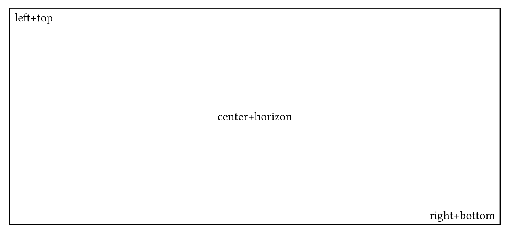
内容变换
可以对内容施加位移、旋转、缩放、倾斜等变化。这些变换只针对内容本身，并不会让其脱离文档流。
旋转rotate(）
rotate(
angle:angle, // 旋转量，角度或弧度，默认为0deg
origin: alignment, // 旋转变换的原点，默认center + horizon
reflow: bool, // 旋转是否影响布局。
body:content, // 要旋转的内容
) -> content
angle可以赋予：
- 角度值：如120deg，代表120°
- 弧度值：如1.57rad，代表1/2弧度，也就是90°
// 以默认旋转中心，顺时针旋转45°
#rotate(45deg)[
#rect()[旋转的内容]
]
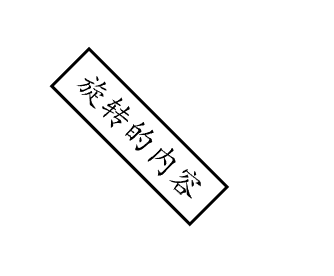
// 以默认旋转中心，逆时针旋转45°
#rotate(-45deg)[
#rect()[旋转的内容]
]
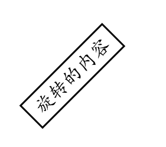
// 以默认旋转中心，顺时针旋转1.57弧度
#rotate(1.57rad)[
#rect()[旋转的内容]
]
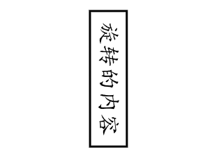
// 以左上角为旋转中心，顺时针旋转30°
#rotate(30deg,origin: top+left)[
#rect()[旋转的内容]
]
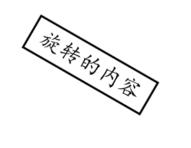
设定reflow
默认旋转后的内容，其占据的位置仍然是以其未旋转之前的边界框计算的。
#lorem(25)
#rotate(45deg)[
#rect()[旋转的内容]
]
#move
#lorem(25)
效果就是旋转后的内容，可能与前后的内容产生视觉上的重叠：
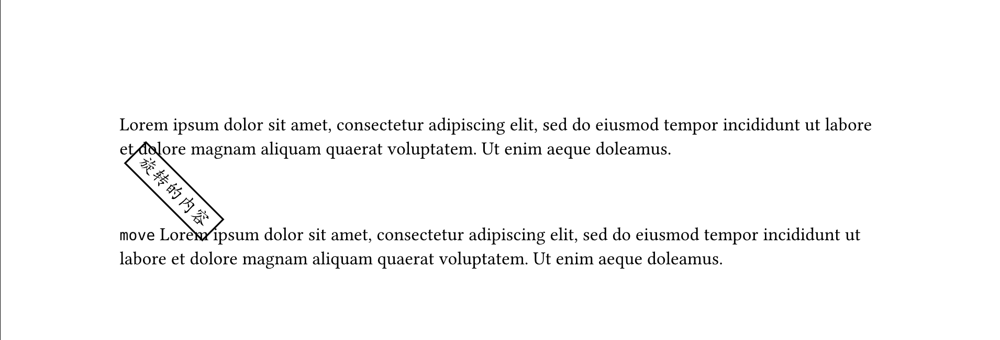
设定reflow: true后，旋转后的内容边界框将重新计算。
#lorem(25)
#rotate(45deg,reflow: true)[
#rect()[旋转的内容]
]
#move
#lorem(25)
这样，旋转的内容就不会与前后内容发生视觉上的重叠：
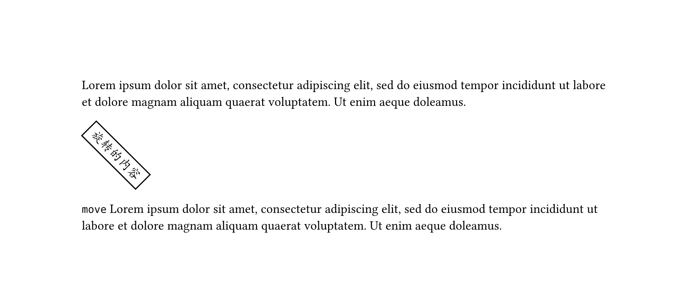
reflow的设置在缩放和扭曲中也一并适用。
缩放scale()
scale(
factor: auto length ratio, // 两个轴的缩放因子
x: autolengthratio, // 水平缩放因子,默认：100%
y: autolengthratio, // 垂直缩放因子,默认：100%
origin: alignment, // 缩放变换的原点，默认：center + horizon
reflow: bool, // 缩放是否影响布局，默认：false
body：content, // 要缩放的内容
) -> content
#rect(
width:100%,
)[
#set align(center)
这里是原始效果
// 水平翻转
#scale(x:50%)[这里是水平压缩50%]
#scale(x:150%)[这里是水平拉伸150%]
#scale(x:-100%)[这里是水平翻转]
// 垂直翻转
#scale(y:50%)[这里是垂直压缩50%]
#scale(y:450%)[这里是垂直拉伸450%]
#scale(y:-100%)[这里是垂直翻转]
]
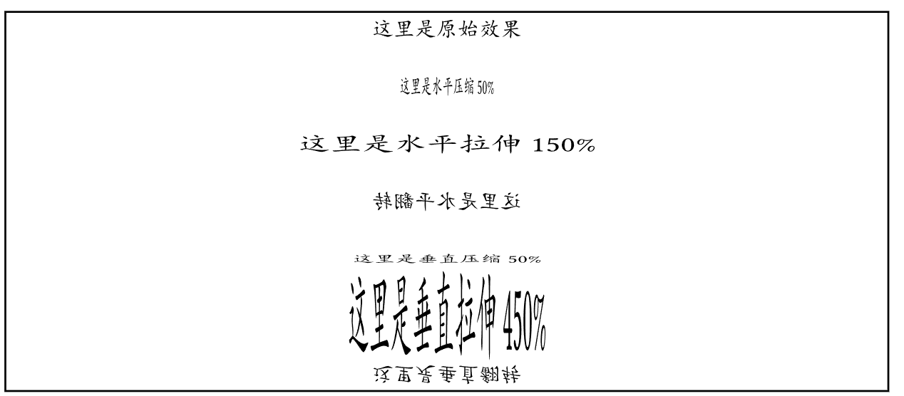
位移move()
move()用于将内容放置到页面指定位置：
move(
dx: relative, // 水平位移值
dy: relative, // 垂直位移值
body:content, // 要移动的内容
) -> content
#move(dx:100pt,dy:100pt)[#image("1.png",width: 200pt)]
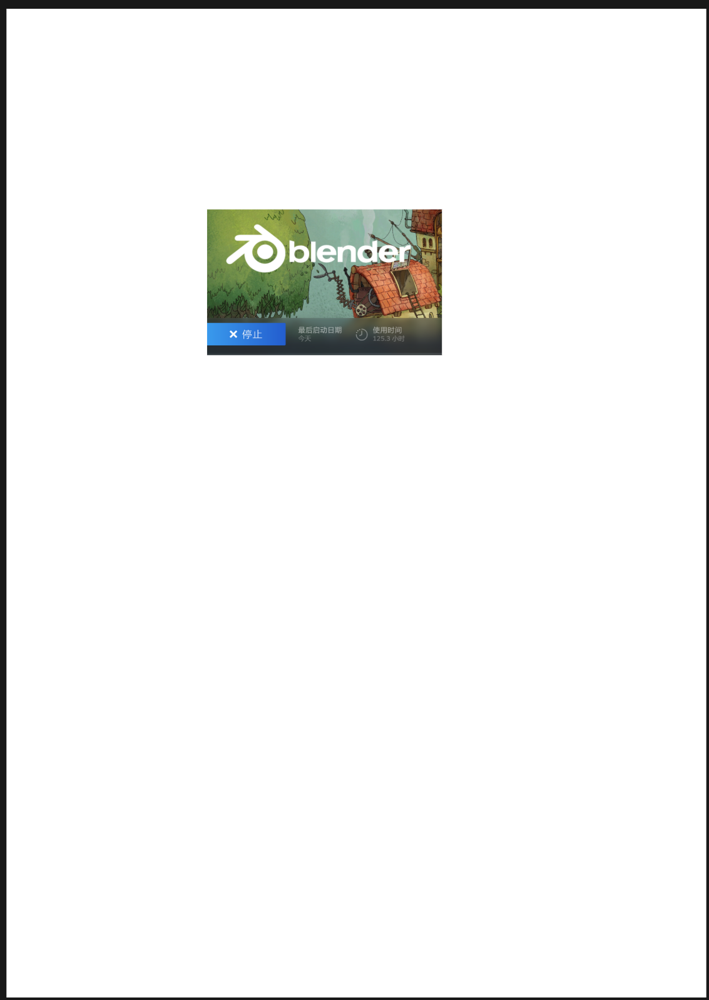
move()本身只是对内容进行位移变换，但是并不会让内容脱离文档流。
#lorem(225)
#move(dx:100pt,dy:100pt)[#image("1.png",width: 200pt)]
#move
#lorem(225)
当位移变换的前后都有内容时，可以看到move()只是对内容进行了偏移，但是其在文档流中占据的位置不发生变化。
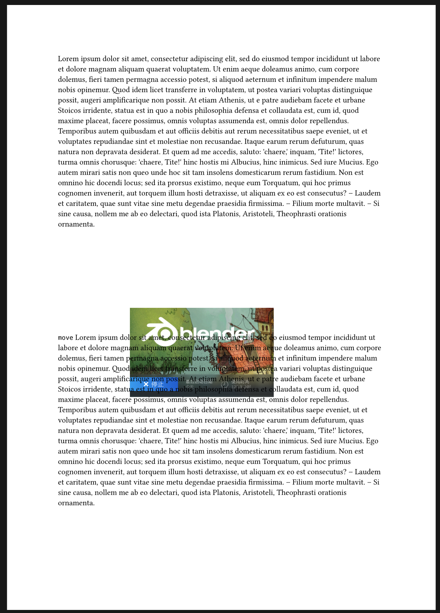
矩形套矩形的特殊效果
#rect(inset: 0pt, move(
dx: 6pt, dy: 6pt,
rect(
inset: 8pt,
fill: white,
stroke: black,
[这里是内容]
)
))
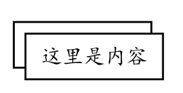
扭曲skew()
skew()用于对内容实行倾斜变换。
skew(
ax: angle, // 水平倾斜角度，默认：0deg
ay: angle, // 垂直倾斜角度，默认：0deg
origin: alignment, // 倾斜变换的原点,默认：center + horizon
reflow: bool, // 倾斜变换是否影响布局
body:content, // 要倾斜的内容
) -> content
#skew(ax:-12deg)[文本的倾斜]
#skew(ax:-12deg)[#rect()]
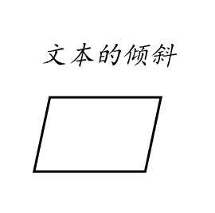
block和box
block和box都可以看作是一个容器，只不过：
block是块级元素，无论宽度是否撑满页面宽度，始终是独占一行-box是行内元素，可以在行内与文字进行混排
block
block(
width: auto relative, // 宽度，默认：auto
height: auto relative, // 高度，默认：auto
breakable: bool, // 是否可以在换页时，打碎，分布到下一页，默认：true
fill: none color gradient pattern, // 背景填充
stroke: none length color gradient stroke pattern dictionary, // 边框样式
radius: relative dictionary, // 圆角
inset: relative dictionary, // 内边距
outset: relative dictionary,
spacing: relative fraction, // 块周围的边距
above: relative fraction, // 与上方内容的边距
below: relative fraction, // 与下方内容的边距
clip: bool, // 是否裁切内容
sticky: bool,
body：none content, // 块中的内容
) -> content
使用block()可以构造一个块级元素：
#block()[123]1212
可以看到block()中的内容不管多少，都独占一行：
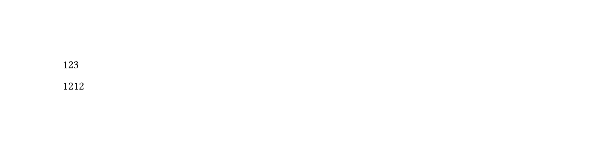
box
box(
width: auto relative fraction, // 宽度，默认：auto
height: auto relative, // 高度，默认：auto
baseline: relative, // 基线偏移量，默认：0% + 0pt
fill: none color gradient pattern, // 背景填充，默认：none
stroke: none length color gradient stroke pattern dictionary,
radius: relative dictionary,
inset: relative dictionary,
outset: relative dictionary,
clip: bool,
body:none content, // 盒子中的内容
) -> content
分栏
Typst中的分栏可以使用columns()进行局部的分栏，也可以在page()函数中设定页面的整体分栏。
整页分栏
#set page(columns: 2) // 设置当前页面整体分为两栏
#lorem(100)
#colbreak() // 强制分栏
#lorem(55)
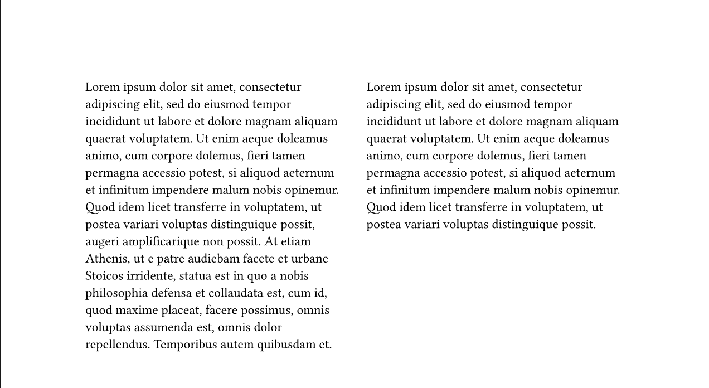
强制分栏可以用colbreak():
colbreak(
weak:bool //如果为 true，则如果当前列已为空，则跳过列分隔符。默认：false
) -> content
局部分栏columns()
columns(
count:int, // 分栏数，默认为2
gutter: relative, // 栏间距，默认：4% + 0pt
body:content, // 要分栏的内容
) -> content
使用columns()可以更自由的在页面中控制分栏和不分栏，而不是整页都分栏。
= 前面的内容
#lorem(100)
= 局部分栏
#columns(2)[
#lorem(100)
#colbreak() // 强制分栏
#image("1.png")
#lorem(35)
]
= 后面的内容
#lorem(55)
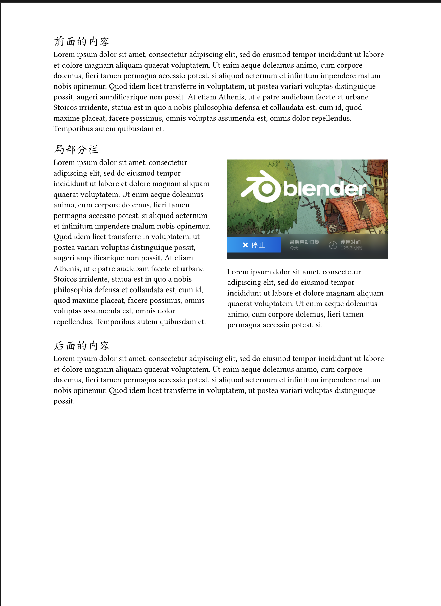
水平和垂直分布
堆叠stack()
stack(
dir: direction, // 内容的排列方向,默认：ttb
spacing: none relative fraction, // 内容间距
body: content, // 要排列的内容
) -> content
dir可能的值为：
ltr：从左到右。rtl：从右到左。ttb：从上到下。btt：从下到上。
默认使用
默认方向从上到下，依次排列：
#stack(
rect[第1个],
rect[第2个],
rect[第3个],
)
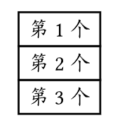
从左到右排列
#stack(
dir:direction.ltr, // 由左向右排列
rect[第1个],
rect[第2个],
rect[第3个],
)
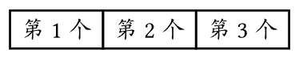
设定间距
#stack(
dir:direction.ltr,
spacing: 5pt, // 设定水平间距
rect[第1个],
rect[第2个],
rect[第3个],
)
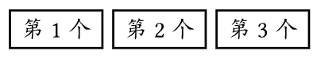
水平和垂直间距
h()和v()函数用于设定内容之间的水平或垂直间距。
// 水平间距
h(
relative fraction, // 间距值
weak: bool,
) -> content
// 垂直间距
v(
relativefraction, // 间距值
weak: bool,
) -> content
设定水平间距
随便写点什么 #h(2em) 后续的内容。
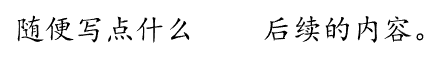
使用分数
随便写点什么 #h(1fr) 后续的内容。\
随便写点什么2 #h(1fr) 后续的内容。
设定垂直间距
随便写点什么3 #v(1em) 后续的内容。
网格布局
grid()用于实现网格布局：
grid(
columns: auto int relative fraction array, // 列数或列设置
rows: auto int relative fraction array, // 行数或行设置
gutter: auto int relati vefraction array, // 行列间距
column-gutter: auto int relative fraction array, // 列间距，优先于 gutter
row-gutter: auto int relative fraction array, // 行间距，优先于 gutter
content, // 布局的子项
) -> content
基础使用
#grid(
columns: 2,
rect[12],
rect[12],
rect[12],
rect[12]
)
设定每列的宽度
// 统一设置rect的样式
#set rect(
width: 100%,
height: 100pt
)
#grid(
columns: (100pt,1fr), // 左侧宽100pt，右侧为页面剩余宽度
rect[1],
rect[2],
rect[3],
rect[4]
)
设定间距
#set rect(
width: 100%,
height: 100pt
)
#grid(
columns: (100pt,1fr),
gutter: 5pt, // 统一设置行列间距
rect[1],
rect[2],
rect[3],
rect[4]
)
隐藏
hide(
body: content // 要隐藏的内容
) -> content
重复
repeat(
body: content, // 要重复的内容
gap: length, // body 的每个实例之间的间，默认：0pt
justify: bool, // 是否增加实例之间的间隙以完全填充可用空间。默认值：true
) -> content
#repeat[.]
#repeat(gap:1em)[\#]
#repeat()[#emoji.flower]
内容花边效果
#repeat()[#emoji.flower]
#lorem(225)
#repeat()[#emoji.flower]
内容边距
pad(
left: relative,
top: relative,
right: relative,
bottom: relative,
x: relative,
y: relative,
rest: relative,
content,
) -> content
#rect()[ // 外部矩形
#pad(
left:100pt, // 左侧边距100pt
rect( // 内部矩形
width: 100%,
height: 100pt,
fill: rgb("#eee"),
[左侧边距100pt]
)
)
]
#rect()[ // 外部矩形
#pad(
rest:100pt, // 统一边距100pt
rect( // 内部矩形
width: 100%,
height: 100pt,
fill: rgb("#eee"),
[统一边距100pt]
)
)
]
#rect()[ // 外部矩形
#pad(
x:100pt, // 左右边距100pt
rect( // 内部矩形
width: 100%,
height: 100pt,
fill: rgb("#eee"),
[左右边距100pt]
)
)
]
【Typst】封面和内页设计函数库PageLib
概述
前天（6月26日）编写了一些Tytpst的页面函数，用于方便的创建诸如纯色背景页面、图片背景页面等的基本函数，并希望基于它们创建更复杂的封面和内页排版效果。
函数已经打包为了Typst模块PageLib.typ，具体使用时可以使用如下形式引入，并直接使用其中的函数。
#import "PageLib.typ":* // 导入页面函数库
完整的模块代码见本文最后。
今天花点时间整理本文，补充了设计思路和具体的函数实现以及使用方法，对部分函数做了改进，希望对使用Typst排版内容的朋友们有点用处。
纯色背景页面函数
自定义函数如下：
#let color_page = page.with(fill:white)
color_page()被定义为内置页面函数page()的变种，设定其填充为纯白色。
使用：
可以直接使用color_page()：
#color_page()[] // 一个纯白色背景的页面
可以用fill参数设定页面的背景色：
#color_page(fill:blue)[] // 一个纯蓝色背景的页面
方括号中输入页面的具体内容即可。
说是纯色背景，其实使用渐变或纹理也是可以的。这里以渐变为例：
#color_page(fill:gradient.linear(..color.map.crest))[]
使用with()的好处
- 使用
with()可以创建函数的变体，尤其基于已经存在的页面元素函数，可以更方便的构造函数的变体。 - 而且类似继承，你可以在新函数中继续使用原函数的所有参数，而不是自己重新写一遍这些参数
使用bg_page()函数取代color_page()
- 其实
color_page()完全可以由bg_page()取代 - 但是为了介绍
with()这种思路还是保留了下来
背景页面函数
这是今日新增页面函数，但是更突出设定背景内容和背景色。
// 背景页面
#let bg_page(
bg_content, // 背景内容
fill:white, // 背景颜色或渐变、纹理
body // 页面正文
) = page(
background: [#bg_content],
fill:fill,
)[#body]
bg_content背景内容可以是任意内容
基础使用
#bg_page(fill:red)[背景内容][页面内容]
背景水印效果
#bg_page(fill:blue.lighten(70%))[
#set text(gray,size: 35pt)
#rotate(30deg)[巽星石出品，盗版必究]
][
= 这里是页面正文
#lorem(255)
= 页面正文2
#lorem(255)
]
图片背景页面函数
图片背景页面函数pic_page()基于基于背景页面函数bg_page()，专门用于创建页面背景是图片的效果，并且提供对背景图片的变换（定位，旋转、缩放、尺寸等）的控制。
pic_page()目前只支持一张背景图。
// 图片背景页面
#let pic_page(
img_path, // 图片路径
fill:white, // 背景颜色或渐变、纹理
// ----------- 定位与变换 -----------
pos:(0pt,0pt), // 左上角位置
size:(100%,100%), // 尺寸
angle:0deg, // 旋转角度
scales:(100%,100%), // 缩放
// ----------------------
body // 页面正文
) = bg_page(fill:fill,)[
#place(top,dx:pos.at(0),dy:pos.at(1))[
#rotate(angle)[
#scale(x:scales.at(0),y:scales.at(1))[
#image(img_path,width:size.at(0),height: size.at(1))
]
]
]
][#body]
基础使用
默认背景图会自适应整个页面尺寸。
#pic_page("me.jpg")[这里是正文]
控制背景图片的位置和尺寸
可以通过pos和size参数方便的控制背景图的尺寸和位置。
#pic_page("me.jpg",size: (100%,50%))[这里是正文]
#pic_page("me.jpg",size: (100%-2cm,30%),pos:(1cm,1cm))[这里是正文]
旋转也不在话下：
#pic_page("me.jpg",size: (100%-2cm,30%),pos:(1cm,2cm),angle: -4deg)[这里是正文]
绝对定位内容函数
绝对定位内容函数，是对内置的定位函数place()、旋转函数rotate()以及缩放函数scale()的整体封装，实现对任意内容在当前页面中的绝对定位和变换。
// 绝对定位的内容
#let place_content(
pos:(0pt,0pt), // 左上角位置
size:(auto,auto), // 尺寸
angle:0deg, // 旋转角度
scales:(100%,100%), // 缩放
body // 具体内容
) = [
#place(top,dx:pos.at(0),dy:pos.at(1))[
#rotate(angle)[#scale(x:scales.at(0),y:scales.at(1))[
#body
]
]
]
]
结合绝对定位内容的封面排版
这里只做简单演示，具体设计时封面元素可以更丰富。
#pic_page("me.jpg",size: (100%,32%))[
#place_content(pos:(60%,20%))[
#text(white,size: 36pt,font: "FZCuHeiSongS-B-GB")[绝对定位标题]
]
#place_content(pos:(0% - 2cm,20%))[
#image("me.jpg",width: 30%,height: 100%)
]
#place_content(pos:(75%,20%+3cm))[
#text(blue,size: 20pt,font: "FZCuHeiSongS-B-GB")[绝对定位副标题]
]
#place_content(pos:(40%,100%))[
#text(gray,size: 30pt,font: "FZCuHeiSongS-B-GB")[底部信息]
]
]
一些特殊背景页面函数
正文区矩形框页面
// 正文区矩形框页面
#let rect_page(
margin:2cm, // 页边距
bg_fill:luma(220), // 背景填充
fill:white, // 矩形填充
inset: 10pt, // 矩形内容边距
radius: 5pt, // 矩形圆角
// ----------- 阴影设置 -----------
has_shadow:false, // 是否有阴影
shadow_offset:(5pt,5pt), // 阴影偏移
shadow_fill:luma(200), // 阴影填充
// ----------- 副矩形设置 -----------
show_bg_rects:false, // 是否显示副矩形
bg_rects_count:1, // 副矩形数量
bg_rects_deg:2deg, // 副矩形旋转角度
bg_rects_start_deg:-4deg, // 副矩形旋转角度
bg_rects_fill:luma(200), // 副矩形基础色
// ----------- 其他自定义背景内容 -----------
bg_contents:none, // 其他自定义背景内容
// ----------------------
body // 页面正文
) = bg_page(fill: bg_fill)[
#let p = 100% - margin * 2 // 版心宽度和高度
#let top_left = (margin+ shadow_offset.at(0),margin+ shadow_offset.at(1))
// 版心副矩形
#if show_bg_rects [
#has_shadow = false // 强制关闭阴影
#for i in range(bg_rects_count) {
let opt = eval("-" + str(i / bg_rects_count * 100) + "%")
let ang = bg_rects_start_deg + bg_rects_deg * i
place_content(pos:(margin,margin),angle:ang)[
#rect(fill:bg_rects_fill.opacify(opt),width: p,height: p,radius: radius)
]
}
]
// 其他自定义背景内容
#if bg_contents != none [#bg_contents]
// 版心阴影
#if has_shadow and show_bg_rects == false [
#place_content(pos:top_left)[
#rect(fill:shadow_fill,width: p,height: p,radius: radius)
]
]
// 版心
#place_content(pos:(margin,margin))[
#rect(fill:fill,width: p,height: p, inset: inset,radius: radius)
]
][#body]
基础效果
#rect_page()[
= 测试
#lorem(225)
= 测试
#lorem(225)
= 测试
#lorem(100)
]
背景和矩形填充控制
#rect_page(
bg_fill:gradient.linear(..(red,blue)), // 背景填充设定为渐变
fill:orange.lighten(70%) // 矩形填充设定为浅橘红色
)[
= 测试
#lorem(225)
= 测试
#lorem(225)
= 测试
#lorem(100)
]
设定阴影
#rect_page(
bg_fill:gradient.linear(..(red,blue)), // 背景填充设定为渐变
fill:orange.lighten(70%), // 矩形填充设定为浅橘红色
has_shadow: true, // 开启阴影
shadow_fill:orange.darken(70%), // 设定阴影颜色
)[
= 测试
#lorem(225)
= 测试
#lorem(225)
= 测试
#lorem(100)
]
开启副矩形
#rect_page(
bg_fill:gradient.linear(..(red,blue)), // 背景填充设定为渐变
fill:orange.lighten(70%), // 矩形填充设定为浅橘红色
has_shadow: true, // 开启阴影
shadow_fill:orange.darken(70%), // 设定阴影颜色
show_bg_rects: true, // 显示副矩形
bg_rects_count: 5 // 副矩形数量
)[
= 测试
#lorem(225)
= 测试
#lorem(225)
= 测试
#lorem(100)
]
提示：
副矩形开启情况下会强制关闭阴影的绘制。
绘制其他内容
包括绘制在主矩形之下，副矩形之前的bg_contents和绘制在主矩形之上的fg_contents。
#rect_page(
bg_fill:gradient.linear(..(red,blue)), // 背景填充设定为渐变
fill:orange.lighten(70%), // 矩形填充设定为浅橘红色
has_shadow: true, // 开启阴影
shadow_fill:orange.darken(70%), // 设定阴影颜色
show_bg_rects: true, // 显示副矩形
bg_rects_count: 5, // 副矩形数量
bg_contents: [
#place(top,dx:-1cm,dy:2cm)[
#circle(radius: 50pt,fill: white.opacify(-50%),stroke: none)
]
#place(top,dx:70%,dy:-1cm)[
#circle(radius: 100pt,fill: white.opacify(-50%),stroke: none)
]
#place(top,dx:2cm,dy:2cm)[
#rotate(2deg)[
#rect(fill:white.opacify(-50%),width: 100% - 4cm,height: 100%- 4cm, inset: 10pt,radius: 10pt)
]
]
],
fg_contents: [
#place(top,dx:2cm,dy:2cm)[
#rotate(0deg)[
#rect(fill:white.opacify(-10%),width: 100% - 4cm,height: 100%- 4cm, inset: 10pt,radius: 10pt)
]
]
#place(top,dx:1%,dy:70%)[
#circle(radius: 40pt,fill:blue.opacify(-50%),stroke: none)
]
#place(top,dx:70%,dy:70%)[
#circle(radius: 100pt,fill: orange.opacify(-50%),stroke: none)
]
]
)[
= 测试
#lorem(225)
= 测试
#lorem(225)
= 测试
#lorem(100)
]
Mac风格背景页面
// Mac风格背景页面
#let mac_page(
margin:2cm, // 背景页边距
title_bar_height:20pt, // 标题栏高度
title_fill:gradient.linear(angle:-90deg,..(gray,gray.lighten(70%))), // 标题栏填充
bg_fill:luma(220), // 背景填充
fill:gray.lighten(70%), // 窗口填充
border: gray, // 窗口边线
inset: 10pt, // 内容区内边距
radius: 5pt, // 窗口圆角
// ----------- 阴影设置 -----------
has_shadow:false, // 是否有阴影
shadow_offset:(5pt,5pt), // 阴影偏移
shadow_fill:luma(200), // 阴影填充
// ----------- 其他自定义背景内容 -----------
bg_contents:none, // 其他自定义背景内容
fg_contents:none, // 其他自定义前景内容
// ----------------------
body // 页面正文
) = page(
fill: bg_fill,
background: [
#let w = 100% - margin * 2 // 版心宽度
#let h = 100% - margin * 2 - title_bar_height // 版心高度
#let top_left = (margin+ shadow_offset.at(0),margin+ shadow_offset.at(1))
// 其他自定义背景内容
#if bg_contents != none [#bg_contents]
// 版心阴影
#if has_shadow [
#place_content(pos:top_left)[
#rect(fill:shadow_fill,width: w,height: h,radius: radius)
]
]
// 版心区域
#place_content(pos:(margin,margin))[
#let tile_rd = (top-left: radius,top-right: radius,rest: 0pt) // 标题圆角
// MAC窗口矩形
#rect(width: w,height: h,inset:0pt,stroke: border,fill: fill,radius: radius)[
// 标题区
#rect(width:100%,height:title_bar_height,fill:title_fill,radius: tile_rd)[
// 三个圆点
#let r = title_bar_height/4.0
#align(left)[
#set circle(radius: r)
#stack(dir: ltr,spacing: 5pt)[#align(horizon)[#circle(fill: red)]][#align(horizon)[#circle(fill: yellow)]][#align(horizon)[#circle(fill:green)]]
]
]
]
]
// 其他自定义前景内容
#if fg_contents != none [#fg_contents]
],
margin: (x:margin+inset,y:margin + title_bar_height +inset)
)[#body]
#mac_page()[
= 测试
#lorem(225)
= 测试
#lorem(225)
= 测试
#lorem(100)
]
开启阴影
#mac_page(has_shadow: true,bg_fill: blue,shadow_fill: blue.darken(70%))[
= 测试
#lorem(225)
= 测试
#lorem(225)
= 测试
#lorem(100)
]
标题区放大
#mac_page(
has_shadow: true,
bg_fill: blue,
shadow_fill: blue.darken(70%),
title_bar_height: 40pt
)[
= 测试
#lorem(225)
= 测试
#lorem(225)
= 测试
#lorem(100)
]
综合效果
#mac_page(
has_shadow: true,
// bg_fill: blue,
shadow_fill: blue.darken(70%),
title_bar_height: 40pt,
radius: 10pt,
bg_contents: [
#let base_color= gray
#place_content(pos:(0pt,10%))[
#circle(radius: 1cm,fill: base_color.lighten(40%))
]
#place_content(pos:(100%-2cm,0%))[
#circle(radius: 0.5cm,fill: base_color.lighten(20%))
]
#place_content(pos:(0pt,10%))[
#circle(radius: 20cm,fill: base_color.lighten(20%).opacify(-50%))
]
#place_content(pos:(0pt,12%))[
#circle(radius: 20cm,fill: base_color.lighten(20%).opacify(-50%))
]
#place_content(pos:(0pt,13%))[
#circle(radius: 20cm,fill: base_color.lighten(10%).opacify(-50%))
]
],
fg_contents: [
]
)[
= 测试
#lorem(225)
= 测试
#lorem(225)
= 测试
#lorem(100)
]
明信片
为了模仿明信片的效果，编写了一个函数。
// 明信片
#let post_card(pos:(0pt,0pt),size:(100%,20cm),angle:0deg,img_uri,title,sub_title) = place(top,dx:pos.at(0),dy:pos.at(1))[
#rotate(angle)[
#rect(fill:white,inset: 10pt,width: size.at(0)+20pt)[
#set par(spacing: 6pt,linebreaks: "simple")
#image(img_uri,width: size.at(0),height:size.at(1))
#text(font: "FZCuHeiSongS-B-GB",size: 30pt)[#title]
#text(font: "KaiTi",size: 20pt)[/#sub_title]
]
]
]
#color_page(fill:gradient.linear(angle:45deg,..(green.lighten(20%),blue.lighten(20%))))[
#rotate(-2deg)[
#post_card("face.jpg")[剪刀手爱德华][Edward Scissorhands]
]
]
#color_page(fill:gradient.linear(angle:45deg,..(green.lighten(20%),blue.lighten(20%))))[
#post_card("kxgr.jpg",angle: 4deg,size:(300pt,400pt),pos: (100pt,250pt))[科学怪人1994][Mary Shelleys Frankenstein]
#post_card("face.jpg",angle: -10deg,size:(300pt,200pt))[剪刀手爱德华][Edward Scissorhands]
]
带透明渐变的单色渐变填充
// 带透明渐变的单色渐变填充(单向)
#let color_op_grad(base_color) = {
let arr = ()
arr.push(base_color.opacify(-60%))
arr.push(base_color.opacify(-100%))
return arr
}
// 带透明渐变的单色渐变填充(双面)
#let color_op_grad2(base_color) = {
let arr = ()
arr.push(base_color.opacify(-100%))
arr.push(base_color.opacify(-60%))
arr.push(base_color.opacify(-60%))
arr.push(base_color.opacify(-100%))
return arr
}
#color_page(fill:color.aqua)[
#place_rect(pos:(0pt,200pt),fill:gradient.linear(..color_op_grad(white)))[
#title(fill:blue)[这是一个绝对定位的标题]
]
#place_rect(pos: (100%-150pt,500pt),fill:gradient.linear(..color_op_grad(white)))[
#sub_title(fill:red)[巽星石]
]
]
彩条线
// 彩条线
#let color_rect_line(colors,width:100%,height:4pt) = [
#let w = width / colors.len()
#stack(
dir:ltr,
..colors.map(
c => [
#rect(fill:c,width:w,height:height)
]
)
)
]
#color_rect_line((red,blue,orange,green,aqua,yellow))
/*
* 名称：PageLib
* 描述：用于创建特殊封面或背景效果的自定义模块
* 作者：巽星石
* 创建时间：2025年6月26日
* 最后修改：2025年6月28日
*/
// -------------------------- 基础页面函数 --------------------------
// 纯色背景页面
#let color_page = page.with(fill:white)
// 背景页面
#let bg_page(
bg_content, // 背景内容
fill:white, // 背景颜色或渐变、纹理
body // 页面正文
) = page(
background: [#bg_content],
fill:fill,
)[#body]
// 图片背景页面
#let pic_page(
img_path, // 图片路径
fill:white, // 背景颜色或渐变、纹理
// ----------- 定位与变换 -----------
pos:(0pt,0pt), // 左上角位置
size:(100%,100%), // 尺寸
angle:0deg, // 旋转角度
scales:(100%,100%), // 缩放
// ----------------------
body // 页面正文
) = bg_page(fill:fill,)[
#place(top,dx:pos.at(0),dy:pos.at(1))[
#rotate(angle)[
#scale(x:scales.at(0),y:scales.at(1))[
#image(img_path,width:size.at(0),height: size.at(1))
]
]
]
][#body]
// -------------------------- 基础绝对定位函数 --------------------------
// 绝对定位的内容
#let place_content(
pos:(0pt,0pt), // 左上角位置
size:(auto,auto), // 尺寸
angle:0deg, // 旋转角度
scales:(100%,100%), // 缩放
body // 具体内容
) = [
#place(top,dx:pos.at(0),dy:pos.at(1))[
#rotate(angle)[#scale(x:scales.at(0),y:scales.at(1))[
#body
]
]
]
]
// -------------------------- 具体背景页面函数 --------------------------
// 正文区矩形框页面
#let rect_page(
margin:2cm, // 页边距
bg_fill:luma(220), // 背景填充
fill:white, // 矩形填充
inset: 10pt, // 矩形内容边距
radius: 5pt, // 矩形圆角
// ----------- 阴影设置 -----------
has_shadow:false, // 是否有阴影
shadow_offset:(5pt,5pt), // 阴影偏移
shadow_fill:luma(200), // 阴影填充
// ----------- 副矩形设置 -----------
show_bg_rects:false, // 是否显示副矩形
bg_rects_count:1, // 副矩形数量
bg_rects_deg:2deg, // 副矩形旋转角度
bg_rects_start_deg:-4deg, // 副矩形旋转角度
bg_rects_fill:luma(200), // 副矩形基础色
// ----------- 其他自定义背景内容 -----------
bg_contents:none, // 其他自定义背景内容
fg_contents:none, // 其他自定义前景内容
// ----------------------
body // 页面正文
) = bg_page(fill: bg_fill)[
#let p = 100% - margin * 2 // 版心宽度和高度
#let top_left = (margin+ shadow_offset.at(0),margin+ shadow_offset.at(1))
// 版心副矩形
#if show_bg_rects [
#has_shadow = false // 强制关闭阴影
#for i in range(bg_rects_count) {
let opt = eval("-" + str(i / bg_rects_count * 100) + "%")
let ang = bg_rects_start_deg + bg_rects_deg * i
place_content(pos:(margin,margin),angle:ang)[
#rect(fill:bg_rects_fill.opacify(opt),width: p,height: p,radius: radius)
]
}
]
// 其他自定义背景内容
#if bg_contents != none [#bg_contents]
// 版心阴影
#if has_shadow and show_bg_rects == false [
#place_content(pos:top_left)[
#rect(fill:shadow_fill,width: p,height: p,radius: radius)
]
]
// 版心
#place_content(pos:(margin,margin))[
#rect(fill:fill,width: p,height: p, inset: inset,radius: radius)
]
// 其他自定义前景内容
#if fg_contents != none [#fg_contents]
][#body]
// Mac风格背景页面
#let mac_page(
margin:2cm, // 背景页边距
title_bar_height:20pt, // 标题栏高度
title_fill:gradient.linear(angle:-90deg,..(gray,gray.lighten(70%))), // 标题栏填充
bg_fill:luma(220), // 背景填充
fill:gray.lighten(70%), // 窗口填充
border: gray, // 窗口边线
inset: 10pt, // 内容区内边距
radius: 5pt, // 窗口圆角
// ----------- 阴影设置 -----------
has_shadow:false, // 是否有阴影
shadow_offset:(5pt,5pt), // 阴影偏移
shadow_fill:luma(200), // 阴影填充
// ----------- 其他自定义背景内容 -----------
bg_contents:none, // 其他自定义背景内容
fg_contents:none, // 其他自定义前景内容
// ----------------------
body // 页面正文
) = page(
fill: bg_fill,
background: [
#let w = 100% - margin * 2 // 版心宽度
#let h = 100% - margin * 2 - title_bar_height // 版心高度
#let top_left = (margin+ shadow_offset.at(0),margin+ shadow_offset.at(1))
// 其他自定义背景内容
#if bg_contents != none [#bg_contents]
// 版心阴影
#if has_shadow [
#place_content(pos:top_left)[
#rect(fill:shadow_fill,width: w,height: h,radius: radius)
]
]
// 版心区域
#place_content(pos:(margin,margin))[
#let tile_rd = (top-left: radius,top-right: radius,rest: 0pt) // 标题圆角
// MAC窗口矩形
#rect(width: w,height: h,inset:0pt,stroke: border,fill: fill,radius: radius)[
// 标题区
#rect(width:100%,height:title_bar_height,fill:title_fill,radius: tile_rd)[
// 三个圆点
#let r = title_bar_height/4.0
#align(left)[
#set circle(radius: r)
#stack(dir: ltr,spacing: 5pt)[#align(horizon)[#circle(fill: red)]][#align(horizon)[#circle(fill: yellow)]][#align(horizon)[#circle(fill:green)]]
]
]
]
]
// 其他自定义前景内容
#if fg_contents != none [#fg_contents]
],
margin: (x:margin+inset,y:margin + title_bar_height +inset)
)[#body]
// -------------------------- 其他函数 --------------------------
// 明信片
#let post_card(pos:(0pt,0pt),size:(100%,20cm),angle:0deg,img_uri,title,sub_title) = [
#place(top,dx:pos.at(0),dy:pos.at(1))[
#rotate(angle)[
#rect(fill:white,inset: 10pt,width: size.at(0)+20pt)[
#set par(spacing: 6pt,linebreaks: "simple")
#image(img_uri,width: size.at(0),height:size.at(1))
#text(font: "FZCuHeiSongS-B-GB",size: 30pt)[#title]
#text(font: "KaiTi",size: 20pt)[/#sub_title]
]
]
]
]
// 带透明渐变的单色渐变填充(单向)
#let color_op_grad(base_color) = {
let arr = ()
arr.push(base_color.opacify(-60%))
arr.push(base_color.opacify(-100%))
return arr
}
// 带透明渐变的单色渐变填充(双面)
#let color_op_grad2(base_color) = {
let arr = ()
arr.push(base_color.opacify(-100%))
arr.push(base_color.opacify(-60%))
arr.push(base_color.opacify(-60%))
arr.push(base_color.opacify(-100%))
return arr
}
// 彩条线
#let color_rect_line(colors,width:100%,height:4pt) = [
#let w = width / colors.len()
#stack(
dir:ltr,
..colors.map(
c => [
#rect(fill:c,width:w,height:height)
]
)
)
]
// 水平分割线
#let hr = line.with(length: 100%,stroke: luma(200))
// 水平分割线 - 虚线
#let dash_hr = line.with(
length: 100%,
stroke: (
paint:luma(200),dash: "dashed"
)
)
// 无序列表
#let rect_list(body) = rect(fill: luma(230),width: 100%,inset: 20pt,radius: 5pt)[
#set list(marker: "👉")
#body
]
Typst中的长度
长度、比例和相对长度以及分数
- 长度(length)：数字带长度单位的组合
- 比例(ratio)：数字带百分号
- 相对长度：比例和长度的组合
- 分数(fraction)：代表剩余空间中的份数
// 长度 - length
100pt = #100pt
1cm = #1cm
1mm = #1mm
1in = #1in
1em = #1em
// 比例 - ratio
100% = #100%
// 分数 - fraction
1fr = #1fr
// 相对长度, ratio和length的组合
#(100% + 200pt)
#(100% + 200pt).length // 获取其length部分
#(100% + 200pt).ratio // 获取其ratio部分
#(1em+30pt).em // 1，获取长度组合的em部分
#(1em+30pt).abs // 30pt，获取长度组合的非em部分
#context {<!-- -->(1em+30pt).to-absolute()} // 41pt,获取长度组合或相对长度的绝对长度，需要在context中使用
缺憾
目前貌似没有办法获取比例以及比例和长度的组合（相对长度）的绝对长度。
-
#context {(100%+30pt).to-absolute()}将会报错 -
#100%.to-absolute()也会提示比例中不存在此方法
Typst 支持的长度单位：
| 单位 | 中文名 | 说明 |
|---|---|---|
| pt | 点/磅 | 全称point，可叫做点，又叫“磅“：是一个物理长度单位，指的是72分之一英寸。 |
| mm | 毫米 | |
| cm | 厘米 | |
| in | 英寸 | 1in = 72pt |
| em | **em(相对长度单位，相对于当前对象内文本的字体尺寸)：**是一个相对长度单位，最初是指字母M的宽度，故名em。现指的是字符宽度的倍数，用法类似百分比，如：0.8em, 1.2em,2em等。通常1em=16px。 |
长度的运算
长度可以进行加减乘除运算：
#(100pt + 35pt)
#(100pt - 35pt)
#(100% * 2)
#(200pt / 2)
单位换算
只要带长度单位的数字都是length类型，就可以使用length类型的函数构造和转换单位。
#1.5cm
#1.5cm.inches()
#1.5cm.mm()
#1.5cm.pt()
#length.cm(15mm)
#length.mm(1.5cm)
注意
可以看到inches()、mm()、cm()等传入的是length类型，返回的则是数字类型，数字和长度不是同一种东西。
字号
**字号：**是中文字库中特有的一种单位，以中文代号表示特定的磅值pt，便于记忆、表述。
Typst本身没有字号的说法，以下是字号的实际尺寸对照表：
| 字号 | pt | em |
|---|---|---|
| 初号 | 42pt | 3.5em |
| 小初 | 36pt | 3em |
| 一号 | 26pt | 2.2em |
| 小一 | 24pt | 2em |
| 二号 | 22pt | 1.8em |
| 小二 | 18pt | 1.5em |
| 三号 | 16pt | 1.4em |
| 小三 | 15pt | 1.3em |
| 四号 | 14pt | 1.2em |
| 小四 | 12pt | 1em |
| 五号 | 10.5pt | 0.875em |
| 小五 | 9pt | 0.75em |
| 六号 | 7.5pt | 0.625em |
| 小六 | 6.5pt | 0.5em |
| 七号 | 5.5pt | 0.4375em |
| 八号 | 5pt | 0.375em |
在Typst中实现字号：
#let fsize = (
"初号":42pt,"小初":36pt,
"一号":26pt,"小一":24pt,
"二号":22pt,"小二":18pt,
"三号":16pt,"小三":15pt,
"四号":14pt,"小四":12pt,
"五号":10.5pt,"小五":9pt,
"六号":7.5pt,"小六":6.5pt,
"七号":5.5pt,"八号":5pt,
)
#for (key,val) in fsize [
#text(size: fsize.at(key))[#key] \
]
07几何图形绘制
概述
Typst内置了一些简单的几何图形绘制函数，它们也是我们用来创建精美排版所必须掌握的内容。尤其是矩形函数rect()，几乎是排版必需品。
系列目录
矩形rect()
rect(
width: auto relative, // 宽度，默认：auto
height: auto relative, // 高度，默认：auto
fill: none color gradient pattern, // 填充，默认：none
stroke: none auto length color gradient stroke pattern dictionary, // 描边样式
radius: relative dictionary, // 圆角半径
inset: relative dictionary, // 内边距
outset: relative dictionary, // 外边距
body: none content, // 内容
) -> content
默认绘制
#rect()

内容
可以在矩形中放置任意文字或内容，因此rect()不是一个简单的绘图函数，而是结合内容排版的。
#rect[]
#rect[123]
#rect[这里是内容]
#rect(width:100%)[这里是内容]
#rect[
任意内容
#image("1.png")
]

块级
rect()绘制的矩形是一个块级元素。
前面的文字，#rect[这里是内容]后面的文字。

综合效果
#rect(
width:100%,
height: 30%,
fill: luma(220),
radius: 5pt, // 圆角
inset: 10pt, // 内容边距
outset: 10pt, // 向外扩展
stroke: 1pt +red
)[这里是内容]

stroke的字典形式
stroke:(
top： // 顶部描边
right： // 右侧描边
bottom： // 底部描边
left： // 左侧描边
x： // 水平描边
y： // 垂直描边
rest：除字典明确设置大小的边外的所有边的笔画。
)
另外还可以使用2pt+blue这样的形式。
radius的字典形式
radius(
top-left： // 左上角半径
top-right： // 右上角的半径
bottom-right：// 右下角半径
bottom-left： // 左下角半径
left： // 左上角和左下角半径
top： // 左上角和右上角的半径
right： // 右上角和右下角的半径
bottom： // 左下角和右下角半径
rest： // 除字典明确设置大小的角之外的所有角的半径
)
正方形square(）
square(
size: auto length, // 边长
width: auto relative, // 宽度
height: auto relative, // 高度
fill: none colorg radientpattern, // 填充
stroke: none auto length color gradient stroke pattern dictionary, // 边线样式
radius: relative dictionary, // 圆角半径
inset: relative dictionary, // 内容边距
outset: relativ edictionary, // 向外扩充距离
body: none content, // 内容
) -> content
size和width、height指定一个即可size和width或height不能同时指定，width和height可以同时指定-width和height同时指定时，谁大谁做边长- 其他与
rect()类似
#square()
#square[123]
#square(width: 100pt)[
#place(center+horizon)[123] // 居中内容
]

圆circle(）
circle(
radius: length, // 半径
width: auto relative, // 宽度
height: auto relative, // 高度
fill: none color gradient pattern, // 填充
stroke: none auto length color gradient stroke pattern dictionary, // 边线样式
inset: relative dictionary, // 内容边距
outset: relative dictionary, // 向外扩展距离
body: none content, // 内容
) -> content
- 与正方形之于矩形类似，
circle()也只能绘制圆而不能绘制椭圆。想要绘制椭圆，需使用ellipse()函数。 radius和width/height，不能同时指定
#circle()
#circle[123]
#circle(width:2cm,fill: orange,stroke: 1pt)[
#place(center+horizon)[123]
]

椭圆ellipse(）
ellipse(
width: auto relative, // 宽度
height: auto relative, // 高度
fill: none color gradient pattern, // 填充
stroke: none auto length color gradient stroke pattern dictionary, // 边线
inset: relative dictionary, // 内边距
outset: relative dictionary, // 向外扩充距离
body: none content, // 内容
) -> content
#ellipse()
#ellipse[]
#ellipse[123]
#ellipse(width: 2cm,height: 1.5cm)[
#place(center+horizon)[123]
]

直线段line(）
line(
start: array, // 线段起点，默认：(0pt, 0pt)
end: none array, // 线段终点，默认：none
length: relative, // 线段长度，仅当end为none时，才会考虑此参数
angle: angle, // 末端点指向的方向，仅当end为none时，才会考虑此参数
stroke: length colorg radient stroke pattern dictionary,
) -> content
#line()
#line(length: 100%)
#line(angle: 90deg)
#line(end: (100pt,100pt),stroke: 1pt+red)
#line(end: (100pt,100pt),stroke:(dash: "dashed"))

路径path(）
path()可以通过指定顶点列表绘制简单的折线、多边形或贝塞尔曲线。
path(
fill: none color gradient pattern, // 填充
stroke: none autolength colorg radient stroke pattern dictionary, // 描边样式
closed: bool, // 是否闭合路径
vertices:array, // 顶点列表
) -> content
每个顶点可以通过 3 种方式定义：
- 一个常规点
- 一个包含两个点的数组，第一个点是顶点，第二个点是控制点。控制点相对于顶点表示，并进行镜像以获得第二个控制点。给定的控制点是影响进入此顶点的曲线的控制点（即使对于第一个点也是如此）。镜像的控制点会影响从此顶点流出的曲线。
- 三个点的数组，第一个是顶点，第二个是控制点（分别是传入和传出的曲线的控制点）。
#path(
closed: true,
(100pt,100pt),
(200pt,200pt),
(100pt,200pt),
)

曲线curve()
curve()是新版本中替代path()的函数。
let curve(
..components: content,
fill: color = none, // 填充
fill-rule: str = "non-zero", // 填充规则
stroke: stroke = auto, // 边线样式
);
#curve(
fill: blue.lighten(80%),
stroke: blue,
curve.move((0pt, 50pt)),
curve.line((100pt, 50pt)),
curve.cubic(none, (90pt, 0pt), (50pt, 0pt)),
curve.close(),
)

多边形polygon(）
polygon(
fill: none color gradient pattern,
stroke: none auto length color gradient stroke pattern dictionary,
vertices:array, // 顶点列表
) -> content
样式相关函数
stroke(）
stroke(
paint: auto color gradient pattern, // 描边样式
thickness: auto length, // 描边粗细
cap: auto str, // 描边末端的渲染方式
join: auto str, // 拐角渲染方式
dash: none auto str array dictionary, // 虚线样式
miter-limit: auto float, //
) -> stroke
cap值指定端点样式：

join值，指定拐点样式：

dash值，指定虚线样式：

| 值 | 描述 |
|---|---|
| dash: (10pt,5pt,“dot”,5pt) | 定义了“虚线长度10pt，间隔5pt，绘制点，间隔5pt”的模式，用于虚线的重复样式。字符串 "dot" 表示一个点。 |
| dash: (array:(10pt,5pt,“dot”,5pt),phase: 5pt)) | 一个字典：+ array指定和上述类似的数组+ phase指定开始绘制的位置 |
颜色
// ----------- 使用内置颜色名称 ---------------
color.green // 颜色名称
// ----------- 灰度色 ---------------
color.luma(100) // 指定亮度的灰色 0~255
// ----------- 各种颜色空间颜色构造 ---------------
color.rgb(255,45,255,100) // RGBA
color.rgb("#ccc") // 十六进制颜色字符串
color.linear-rgb(200,200,200,200)
color.hsl(100deg, 100, 100, 100)
color.hsv(90deg,100,100,100)
color.oklab()
color.oklch()
color.cmyk()
内置颜色名称
Typst 内置了一些颜色，可以直接通过其名称使用。

#rect(fill:red)
#rect(fill:blue)
#rect(fill:green)

灰度色luma()
luma()用于构造灰度色：
color.luma(
lightness: int ratio, // 亮度,0~255之间的整数，或者0%~100%之间的比例
alpha: ratio, // Alpha分量。
color, // 要转换为灰度的颜色。
) -> color
#rect(fill:luma(200))
#rect(fill:luma(90%))

RGB颜色构造
#rect(fill:rgb(255,45,255,100)) // RGBA
#rect(fill:rgb("#ccc")) // 十六进制颜色值

其他颜色空间函数
除了RGB之外，Typst还支持其他颜色空间的函数。可以自行实验。
color.linear-rgb(200,200,200,200)
color.hsl(100deg, 100, 100, 100)
color.hsv(90deg,100,100,100)
color.oklab()
color.oklch()
color.cmyk()
预定义的颜色映射表
Typst 内置许多可用于渐变的预设颜色映射。
可以使用如下形式指定：
fill:gradient.linear(..color.map.xxx))

颜色函数
color类型或者叫模块，提供了诸多方法，也可以通俗的叫做“颜色函数”。来实现一些颜色相关的操作。
components
components()用于获取颜色分量组成的数组。
components(
alpha:bool // 是否包含 Alpha 分量。
) -> array
#rgb(100,100,100).components() // (39.22%,39.22%,39.22%,100%)
#rgb("#ccc").components() // (80%,80%,80%,100%)
space
space()获取颜色值的构造函数名。
#let color = cmyk(1%, 2%, 3%, 4%)
#(color.space()) // cmyk
to-hex
返回颜色的 RGB（A） 十六进制表示形式（如 #ffaa32 或 #020304fe）。如果 alpha 分量等于 ff （255 / 100%），则省略 alpha 分量（#020304fe 中的最后两位数字）。
#rgb(100,100,100).to-hex() // #646464
#blue.to-hex() // #00749
lighten和darken
lighten()和darken()用于获得已有颜色的更量或更暗的版本。
blue.lighten(x%) // 获取更亮的蓝色
blue.darken(x%) // 获取更暗的蓝色


saturate和desaturate
增加或减少饱和度。
blue.desaturate(x%)

negate
使用提供的色彩空间生成互补色。您可以将其视为色轮上的另一侧。
self.negate(space:any) -> color
rotate
将颜色的色相旋转给定的角度。
self.rotate(
angle,
space: any,
) -> color
mix
通过混合两种或多种颜色来创建颜色。
在具有色相分量（hsl、hsv、oklch）的色彩空间中，一次只能混合两种颜色。在这样的空间中混合两种以上的颜色将导致错误！
color.mix(
..colorarray,
space: any,
) -> color
实现类似两种颜色之间插值的效果：
color.mix(
(blue,10% * i),
(red,100% - 10% * i),
)

transparentize和opacify
transparentize()设定颜色的透明度opacify()设定颜色的不透明度

渐变
包括线性渐变、径向渐变和锥形渐变。
#square(fill: gradient.linear(..color.map.rainbow)) \\ 线性渐变
#square(fill: gradient.radial(..color.map.rainbow)) \\ 径向渐变
#square(fill: gradient.conic(..color.map.rainbow)) \\ 锥形渐变
线性渐变
gradient.linear(
stops: color array, // 停止点
space: any, // 要在其中对渐变进行插值的色彩空,默认为oklab
relative: auto str, // 渐变的相对位置
dir: direction, // 渐变方向
angle: angle, // 渐变角度
) -> gradient
双色线性渐变
#set rect(width:100%,height: 100pt)
#let gds = (
gradient.linear(red,blue), // 最简单的用法，指定两个颜色
gradient.linear(red,blue,angle:45deg), // 渐变角度45°
gradient.linear(red,blue,dir:ttb), // 渐变方向上到下
)
#for gd in gds [
#gd
#rect(fill:gd)
]

径向渐变
gradient.radial(
colorarray,
space: any,
relative: autostr,
center: array,
radius: ratio,
focal-center: autoarray,
focal-radius: ratio,
) -> gradient
锥形渐变
gradient.conic(
colorarray,
angle: angle,
space: any,
relative: autostr,
center: array,
) -> gradient
渐变可用于以下目的：
- 作为填充来绘制形状的内部：
rect(fill: gradient.linear(..)) - 作为描边来绘制形状的轮廓：
rect(stroke: 1pt + gradient.linear(..)) - 作为文本的填充：
set text(fill: gradient.linear(..)) - 作为色图，您可以从以下位置取样：
gradient.linear(..).sample(0.5)
纹理
旧版本叫pattern，新版版叫tiling。
tiling(
size: auto array, // 尺寸
spacing: array, // 间距
relative: auto str,
body: content, // 纹理要平铺的内容
) -> pattern
#let pat = tiling(size: (30pt, 30pt))[
#rect(width: 30pt,height: 30pt)
]
#rect(fill: pat, width: 100%, height: 120pt, stroke: 1pt)

#let pat = tiling(size: (30pt, 30pt))[
#place(line(start: (0%, 0%), end: (100%, 100%)))
#place(line(start: (0%, 100%), end: (100%, 0%)))
]
#box(fill: pat,width:30pt,height: 30pt)
#rect(fill: pat, width: 100%, height: 120pt, stroke: 1pt)

#let pat = tiling(size: (30pt, 30pt))[
#line()
]
#rect(fill: pat, width: 100%, height: 120pt, stroke: 1pt)

#let pat = tiling(size: (10pt, 10pt))[
#place( line())
#place( line(angle: 90deg))
]
#rect(fill: pat, width: 100%, height: 120pt, stroke: 1pt)

#let pat = tiling(size: (30pt, 30pt))[
#set rect(width: 50%,height: 50%,fill: red)
#place()[#rect(width: 50%,height: 50%)]
#place(dx:15pt,dy:15pt)[#rect()]
]
#box(fill: pat,width:30pt,height: 30pt)
#rect(fill: pat, width: 100%, height: 120pt, stroke: 1pt)

【Typsy模板】RedNote
概述
基于Typst编写的小红书图文排版模板。
模板效果
使用
#import "tmp/RedNote.typ":* //导入
#show:doc => rednote(
my_title:[基于封面元素语义化函数封装的封面设计],
my_sub_title:[小红书专用],
my_info:[一种很新的Typst封面设计思路],
img_url: "../face.jpg",
logo_url: "../face.jpg",
doc
)
// ----------------------- 正文 -----------------------
//...文章正文
模板代码
/*
* 名称: RedNote
* 类型：Typst自定义模板
* 描述：小红书图文排版模板
* 创建时间：2025年6月26日
* 最后修改：2025年6月29日
*/
// ----------------------- 通用元素函数 -----------------------
// 水平分割线
#let hr = line.with(length: 100%,stroke: luma(200))
// 水平分割线 - 虚线
#let dash_hr = line.with(
length: 100%,
stroke: (
paint:luma(200),dash: "dashed"
)
)
// 无序列表
#let rect_list(body) = rect(fill: luma(230),width: 100%,inset: 20pt,radius: 5pt)[
#set list(marker: "👉")
#body
]
// 对齐
#let center(it) = box(width: 1fr)[#align(alignment.center)[#it]]
#let left(it) = box(width: 1fr)[#align(alignment.left)[#it]]
#let right(it) = box(width: 1fr)[#align(alignment.right)[#it]]
#let top_left = place.with(top,dy:1cm,dx:1cm)
#let bottom = place.with(bottom)
// ----------------------- 模板函数 -----------------------
// 模板
#let rednote(
doc,
my_title:none,
my_sub_title:none,
my_info:none,
img_url:"",
logo_url:"",
) = [
// ----------------------- 封面基础设定 -----------------------
#set page(margin: 0cm)
// ----------------------- 封面元素设定 -----------------------
// 标题
#let title = text.with(size:50pt,font:"FZCuHeiSongS-B-GB")
#let sub_title = text.with(size:30pt,font:"Ink Free")
// 头图
#let top_image = image.with(height: 40%,width:100%,fit:"cover")
// 内容
#let body = block.with(inset: 1cm,height: 1fr)
// 底部信息区域
#let info = text.with(size:30pt,font:"SimHei")
// Logo
#let logo(img,sttr) = rect(stroke: none,inset: 5pt)[
#set text(size: 18pt,font:"SimHei")
#stack(dir:ltr,spacing: 5pt)[#img][#sttr]
]
// ----------------------- 实际封面设计区 -----------------------
#let face_page(img_url,logo_url) = [
#top_image(img_url,height: 50%)
#top_left[
#logo[#image(logo_url,width: 40pt,height: 40pt)][#text(white)[巽星石 \ XUN.SR]]
]
#body[
// 标题和副标题
#title(red)[#center[#my_title]] \
#sub_title(luma(100))[#center[#my_sub_title]]
// 底部文字
#bottom[
#hr()
#show "Typst":it => [#text(blue,size: 40pt,font: "Impact")[#it]]
#center[#info[#my_info]]
]
]
]
#face_page(img_url,logo_url)
// ----------------------- 正文页面设定 -----------------------
#set page(
margin:(y:3cm,x:1cm),
header: [
#right[#text(size: 14pt)[#my_title <<]]
#hr()
],
footer: [
#hr()
#show "Typst":it => [#text(blue,size: 26pt,font: "Impact")[#it]]
#text(size: 14pt)[
>> #my_info]
]
)
#set par(
first-line-indent: (
amount: 2em,
all: true
),leading: 0.8em,
)
// 正文
#set text(size: 18pt,font:"SimSun",lang: "zh")
// 标题
#show heading:set block(inset: (y:0.5em))
#show heading:set text(font:"SimHei")
#show heading.where(level: 1):set text(size: 30pt)
#show heading.where(level: 2):set text(size: 25pt)
#show heading.where(level: 3):set text(size: 20pt)
// 代码块
#show raw.where(block: true):set block(width: 100%, inset: 20pt,radius: 5pt,stroke: luma(230))
#show raw.where(block: true):set text(size: 14pt)
#show raw.where(block: false):set text(red)
// 一些特殊词的高亮
#show "Typst":set text(blue,font:"Candara")
#show "MarkDown":set text(orange,font:"Candara")
#show "Marp":set text(red,font:"Candara")
#show "HTML":set text(orange,font:"Candara")
#show "CSS":set text(orange,font:"Candara")
// ----------------------- 正文 -----------------------
#doc
]
【Typst第三方包】彩色提示框gentle-clues
概述
gentle-clues提供简洁易用的提示框。内置多种样式，还可以轻松自定义。
用法
#set text(lang: "zh") // 设定文档语言为中文
#import "@preview/gentle-clues:1.2.0":* // 导入包
#tip["这是一个提示"] // 使用函数创建提示框
默认内置样式
自定义样式
使用clue()函数
clue(
icon:, // 图标
// ----------------- 标题设置 -----------------
title:, // 标题
title-font:, // 标题字体
title-weight-delta:, // 标题字体粗细
// ----------------- 颜色设置 -----------------
accent-color: rgb("#001f3f"), // 主题色，进行整体风格设置
header-color:, // 标题区颜色
body-color:, // 正文区颜色
// ----------------- 边框设置 -----------------
border-color:, // 边框颜色
border-width:, // 边框宽度
radius: length, // 边框圆角
// ----------------- 其他设置 -----------------
width: length, // 整体宽度
stroke-width: length, // 左侧边线宽度
content-inset: length, // 正文区内边距
header-inset: length, // 正文区内边距
headless: boolean, // 是否在没有设定标题时显示
breakable: boolean, // 是否自动换行
content: content, // 内容
) = any;
#clue(
icon: [#emoji.alien], // 图标
title: "概述", // 标题
accent-color: blue, // 主题色
)[这里是内容]
进一步我们可以设定自己的函数来封装我们自定义的提示框：
#let alien_box(title:"概述",body) = clue(
icon: [#emoji.alien], // 图标
title: title, // 标题
accent-color: blue, // 主题色
)[#body]
#alien_box[这里是文本]
【Typst第三方包】高颜值盒子showybox
概述
Showybox可以创建另一种风格的圆角框区域，相比gentle-clues，它的风格更优雅，适合于更广泛的内容强调排版情景。
基础用法
#import "@preview/showybox:2.0.4": showybox // 导入包
// 使用showybox函数
#showybox(
[你好]
)
或者：#showybox[Hello world!]，显示为：
显示多个内容块
showybox()函数可以接受多个内容块：
#showybox(
[你好],
[这是第二段],
[这是第三段]
)
或者：#showybox[你好][这是第二段][这是第三段]，显示为：
显示标题和页脚
#showybox(
title:"这里是标题", // 设定标题
footer:"这里是footer", // 设定页脚
[你好],
[这是第二段],
[这是第三段]
)
效果如下：
showybox()函数
为了进一步的使用强大的showybox，必须深入了解showybox()函数的参数。
showybox()函数是showybox包的核心，showybox()函数参数定义如下：
showybox(
// ---------------- 基础设定 ----------------
title: str = "", // 标题
footer: str = "", // 页脚
width: ratio = 100%, // 宽度
// ---------------- 具体样式设定 ----------------
frame: dictionary, // 框架属性
title-style: dictionary, // 标题样式
body-style: dictionary, // 正文样式
footer-style: dictionary, // 页脚样式
sep: dictionary, // 分隔符属性
shadow: none dictionary, // 阴影
breakable:bool, // 设定showybox在到达页面末尾时是否会中断
// ---------------- 内容 ----------------
body, // 内容，可以是多个内容快
)
框架属性
frame:(
/ ----------------- 边框样式 -----------------
radius // 边框的圆角半径，默认为5pt
thickness // 边线厚度，默认为1pt
dash // 边框样式，默认为solid
/ ----------------- 颜色设置 -----------------
title-color // 标题背景色,默认为black
body-color // 正文背景色,默认为white
footer-color // 页脚背景色,默认为luma(85)
border-color // 边框的颜色,默认为black
/ ----------------- 内边距设定 -----------------
inset // 标题、正文和页脚统一内边距，默认为x: 1em, y: 0.65em
title-inset // 标题内边距
body-inset // 正文内边距
footer-inset // 页脚内边距
)
标题样式
title-style:(
color // 颜色，默认为white
weight // 粗细，默认为bold
align // 文本对齐方式，默认为left
sep-thickness // 标题和正文之间分割线的粗细，默认为 1pt
boxed-style: none dictionary // 浮动框样式，默认为 none
)
其中：
-
boxed-style如果为none则显示为正常的标题区 -
boxed-style如果设定为字典，则标题显示为浮动框形式
boxed-style的具体设定如下：
boxed-style:(
anchor:( // 锚点，决定浮动标题框的水平和垂直位置
y:top horizon bottom, // 垂直锚点,默认为 horizon
x:left start center right end // 水平锚点,默认为 left
),
offset:( // 偏移值
x:length, // 水平偏移值，默认为 0pt
y:length, // 垂直偏移值，默认为 0pt
)
radius： // 浮动标题框的圆角半径，默认为5pt
)
正文样式
body-style:(
color // 正文文本颜色,默认为black
align // 正文文本对齐方式,默认为left
)
页脚样式
footer-style:(
color // 页脚文本颜色，默认为luma(85)
weight // 页脚文本粗细，默认为regular
align // 页脚文本对齐方式，默认为left
sep-thickness // 正文和页脚之间分隔线的粗细，默认为1pt
)
分隔线属性
sep:(
thickness // 分隔线的厚度，默认为1pt
dash // 分隔线的样式，默认为"solid"
gutter // 分隔线上方和下方的间距，默认为0.65em
)
阴影属性
shadow:(
color // 阴影颜色，默认为 black ）
offset：length dictionary, // 阴影偏移量，默认为4pt，可用字典分别设定x和y分量
)
设定标题为浮动框样式
通过设定title-style中的boxed-style为字典而非none，就可以让标题从默认形式转为浮动框形式。
#showybox(
title:"这里是标题",
footer:"这里是footer",
title-style:( // 设定标题样式
boxed-style:( // 浮动框样式
anchor:(x:(center)) // 定位：水平居中
)
),
[你好],
[这是第二段],
[这是第三段]
)
效果如下：
我们还可以进一步的设定浮动框的样式：
#showybox(
title:"这里是标题",
footer:"这里是footer",
title-style:( // 设定标题样式
boxed-style:( // 浮动框样式
anchor:(x:(start)), // 定位：水平居右
offset:(x:10pt), // 水平向左偏移10pt
radius:0pt, // 消除圆角
)
),
[你好],
[这是第二段],
[这是第三段]
)
效果如下：
设定颜色和阴影
// 创建一个showybox
#showybox(
frame: ( //边框样式
border-color: red.darken(50%), // 边框颜色
title-color: red.lighten(60%), // 标题区背景色
body-color: red.lighten(80%) // 正文区背景色
),
title-style: ( //标题区样式
color: black, // 标题字色
weight: "regular", // 文字粗细
align: center // 文本对齐方式
),
shadow: ( //阴影
offset: 3pt, // 阴影偏移量 ，也就是向坐下偏移(3,3)
),
title: "这里是标题", //标题
lorem_zh(5),
lorem_zh(2)
)
效果如下：
设定虚线效果
// 创建另一个showybox
#showybox(
frame: ( //边框样式
dash: "dashed",
border-color: red.darken(40%)
),
body-style: ( //正文区样式
align: center
),
sep: ( //分隔符样式
dash: "dashed"
),
shadow: ( //阴影
offset: (x: 2pt, y: 3pt),
color: yellow.lighten(70%)
),
[这是一个重要的信息！],
[在外面要小心。有危险的香蕉！]
)
效果如下：
封装函数
可以看到showybox本身是一个需要高度参数定义，才能显现各种样式的包。所以很适合在它的基础上自己封装几个样式的函数，然后方便重复使用。
09.3Typst第三方包代码块样式增强Codly
简介
Codly提供增强的代码块 样式 ，包括显示行号，语言图标等高级效果。
Codly 的配套包codly-languages提供了多种语言图标和颜色。
使用
#import "@preview/codly:1.3.0": * // 导入codly包
#import "@preview/codly-languages:0.1.7": * // 导入codly配套包codly-languages
#show: codly-init.with() // 初始化codly，每个文档只需执行一次
#codly(languages: codly-languages) // 配置codly
//添加一个代码块，它就会自动正确显示
```rust
pub fn main() {
println!("Hello, world!");
}
```
显示如下：

可以看到相比原始的 代码 块，codly的代码块样式好看不少，而且增加了语言类型和行号的显示。
codly()完整定义
codly( Typst code
enabled: true, // 是否禁用codly
offset: 0, // 行号偏移，可以理解为起始行号
offset-from: none, // 从指定的代码块进行行号偏移
range: none, // 显示的行号范围，如(2,4)
ranges: (), // 显示的多个行号范围，如((2,2),(4,4))
languages: (:), // 语言设定，包括显示名称、图标和颜色
radius: 0.32em, // 代码块边框的圆角度数
inset: 0.32em, // 每行的内边距
fill: none, // 代码块背景
zebra-fill: luma(240), // 间隔填充色
stroke: 1pt + luma(240), // 代码块边框的边线样式
// ----------------- 语言名称框样式 -----------------
display-name: true, // 是否显示语言的名称
display-icon: true, // 是否显示语言的图标
default-color: rgb("#283593"), // 语言名称背景色
lang-inset: 0.32em,
lang-outset: (x: 0.32em, y: 0pt),
lang-radius: 0.32em,
lang-stroke: (lang) => lang.color + 0.5pt,
lang-fill: (lang) => lang.color.lighten(80%),
lang-format: codly.default-language-block,
// ----------------- 行号样式 -----------------
number-format: (number) => [ #number ],
number-align: left + horizon,
number-placement: "outside",
smart-indent: false, // 智能缩进
smart-skip: true, // 智能省略
annotations: none,
annotation-format: numbering.with("(1)"),
// ----------------- 高亮样式 -----------------
highlights: none,
highlight-radius: 0.32em,
highlight-fill: (color) => color.lighten(80%),
highlight-stroke: (color) => 0.5pt + color,
highlight-inset: 0.32em,
highlight-outset: 0pt,
highlight-clip: true,
reference-by: line,
reference-sep: "-",
reference-number-format: numbering.with("1"),
// ----------------- 页头 -----------------
header: none, // 顶部显示额外行，需要设定为内容块
header-repeat: false,
header-transform: (x) => x,
header-cell-args: (),
// ----------------- 页脚 -----------------
footer: none, // 底部显示额外行，需要设定为内容块
footer-repeat: false,
footer-transform: (x) => x,
footer-cell-args: (),
breakable: false, // 是否能在换页时智能拆分
)
禁用和启用
可以使用codly-disable() 函数 暂时禁用codly，用codly-enable()函数再次启用codly。
#codly-disable() // 暂时禁用codly
```typ
Example
*Hello, World!*
```
#codly-enable() // 再次启用codly
```typ
Example
*Hello, World!*
```
效果如下：

或者，你可以使用 no-codly() 函数在局部实现相同的禁用效果：
#no-codly[
```typ
Example
*Hello, World!*
]

显示header和footer
#codly(
header: [这里是header],
footer: [这里是footer],
) // 不显示行号
```py
def fib(n):
if n <= 1:
return n
else:
return fib(n - 1) + fib(n - 2)
print

智能缩进
默认情况下，Codly 启用了智能缩进 ，这意味着 Codly 将自动 检测 代码块的缩进并相应地调整换行时的水平偏移量。可以使用 smart-indent 参数禁用此功能。
#codly(smart-indent: false)
智能省略
#codly(
smart-skip: true,
ranges: ((2,2),(4,4))
) // 不显示行号
```py
def fib(n):
if n <= 1:
return n
else:
return fib(n - 1) + fib(n - 2)
print(fib(25))
```

设置语言选项
#codly(
languages: (
py:( // 具体的语言
name:[Python], // 显示名称
color:green, // 背景和边框基础色
icon:"🐍" // 语言图标
)
)
) // 不显示行号
```py
def fib(n):
if n <= 1:
return n
else:
return fib(n - 1) + fib(n - 2)
print(fib(25))
```

codly-lang包包含了许多语言的预定义设置，使用起来非常方便。自2024年11月19日起，该包已被codly的作者正式认可。
#import "@preview/codly-languages:0.1.7": * // 导入codly配套包codly-languages
#codly(
languages: codly-languages // 使用codly-languages包的设定
) // 不显示行号
```py
def fib(n):
if n <= 1:
return n
else:
return fib(n - 1) + fib(n - 2)
print(fib(25))
```

引用代码块
Codly 提供了广泛的功能来引用代码块、线条、高亮和注释。这是通过以下方式完成的：
- 行速记
@<label>：<line> - 高亮显示或批注标签
@<highlight>
#set text(lang: "zh")
#figure(
caption: "样例代码"
)[
```typ
Example
*Hello, World!*
```
]<my-label>
我可以引用我的代码块 @my-label,或者引用它的某行 @my-label:2。

设置行号偏移量
如果你想向代码块添加偏移量，但不选择行的子集，你可以使用 codly-offset 函数：
````typ
#codly(offset:5)
```typ
Example
*Hello, World!*

设置相对于另一个代码块的行号偏移量
通过 offset-from 参数并为 “parent” 代码块指定 Typst 标签来完成的：
```py
def fib(n):
if n <= 1:
return n
return fib(n - l) + fib(n - 2)
```<fib-fn> // 设定代码块的标签
在另一个代码块显示第5行
#codly(offset-from:<fib-fn>) // 基于指定标签的代码块进行行数偏移
```py
fib(25)
```

选择行的子集
如果要选择行的子集，可以使用 codly-range 函数。通过将 start 设置为 1 并将 end 设置为 none，可以选择从代码块的开头到结尾的所有行。
````py
#codly-range(2, end: 2) // 只显示第二行
```py
def fib(n):
if n <= 1:
return n
return fib(n - l) + fib(n - 2)
fib(25)
```

#codly-range(2, end: none) // 第二行直到末尾

添加 “skip”
您可以使用 skips 参数在行之间添加假的跳过：
#codly(skips: ((5, 32))) // 从第5行开始，跳过32行（也就是跳到37行）
```py
def fib(n):
if n <= 1:
return n
return fib(n - l) + fib(n - 2)
fib(25)
```

块中的代码将是相同的（除了添加的行包含 …字符），但行号将进行调整以反映跳过。
这可以使用 skip-line 和 skip-number 进行自定义，以自定义它的外观。
添加 高亮显示
您可以使用 highlights 参数高亮显示行或行的指定部分：
#codly(highlights: (
(line: 4, start: 2, end: none, fill: red),
(line: 5, start: 13, end: 19, fill: green, tag: "(a)"),
(line: 5, start: 26, fill: blue, tag: "(b)"),
))
```py
def fib(n):
if n <= 1:
return n
else:
return fib(n - 1) + fib(n - 2)
print(fib(25))
```

添加注解
您可以使用 annotations 参数为行或多行创建侧边注解：
#codly(
annotations: (
(start: 2,end: 5,
content: block(width: 5em,[函数体])
),
(start: 6,end: 6,
content: block(width: 2em,[调用])
),
)
)
```py
def fib(n):
if n <= 1:
return n
else:
return fib(n - 1) + fib(n - 2)
print(fib(25))
```

其他设定
#codly(
number-format: none, // 不显示行号
zebra-fill: none, // 不显示间隔填充
stroke: 1pt + red, // 设定边线样式
display-icon: false // 不显示语言图标
) // 不显示行号
```py
def fib(n):
if n <= 1:
return n
else:
return fib(n - 1) + fib(n - 2)
print(fib(25))
```

【Typst第三方包】Latex公式转Typst：MiTex
概述
LaTeX 对 Typst 的支持，由 Rust 和 WASM 提供支持。
MiTeX 将 LaTeX 代码处理成抽象语法树 （AST）。然后，它将 AST 转换为 Typst 代码，并通过 eval 函数将代码评估为 Typst 内容。
MiTeX 已被证明在大型项目中是实用的。它已经从 OI Wiki 正确转换了 32.5k 方程。相比 texmath，MiTeX 在该 wiki 项目中具有更好的显示效果和性能。它也更容易使用，因为将 MiTeX 导入 Typst 只是一行代码，而 texmath 是一个外部程序。
此外，MiTeX 不仅体积小 ，而且速度快 ！MiTeX 的大小仅为 185 KB 左右，而 texmath 的大小为 17 MB。下面显示了一个不严格但直观的比较。从 OI Wiki 转换 32.5k 方程，texmath 大约需要 109 秒，而 MiTeX WASM 只需要 2.28 秒，MiTeX x86 只需要 0.085 秒。
多亏了 @Myriad-Dreamin，他完成了最复杂的开发工作：开发用于生成 AST 的解析器。
MiTeX 作为 Typst 封装
- 使用
mitex-convert将 LaTeX 代码转换为字符串中的 Typst 代码。 - 使用
mi在 Typst 中渲染内联 LaTeX 方程。 - 使用
mitex(numbering: none, supplement: auto, ..)或mimath在 Typst 中渲染块 LaTeX 方程。 - 使用
mitext在 Typst 中渲染 LaTeX 文本。
PS： #set math.equation(numbering: "(1)") 也适用于 MiTeX。
用法简单粗暴：
#import "@preview/mitex:0.2.5": *
#mitex(
`\frac 1 2`
)
#import "@preview/mitex:0.2.5": *
#mitex(`
\begin{cases}
x = 2 \\
y = 2
\end{cases}
`)
#mitex-convert(`\sin x`) // sin x
行内#mi(`x^2+y^2`)
自定义模块mDateTime
用字符串构造datetime
Typst自带的datetime需要使用字典形式构造。我觉得不太好看，所以编写函数用字符串构造datetime。
实现
// 日期函数
#let day(date_str) = {
let(y,m,d) = date_str.split("-")
return datetime(
year:int(y),
month:int(m),
day:int(d),
)
}
// 时间函数
#let time(time_str) = {
let(h,m,s) = time_str.split(":")
return datetime(
hour:int(h),
minute:int(m),
second:int(s),
)
}
// 日期时间函数
#let day_time(date_time_str) = {
let(date_str,time_str) = date_time_str.split(" ")
let(y,m,d) = date_str.split("-")
let(h,mt,s) = time_str.split(":")
return datetime(
year:int(y),
month:int(m),
day:int(d),
hour:int(h),
minute:int(mt),
second:int(s),
)
}
使用也很简单，调用函数即可。
#day("2025-10-11") // datetime(year: 2025，month:10，day: 11)
#time("12:09:08") // datetime(hour:12，minute:9，second:8)
#day_time("2025-10-12 11:08:09")
月历和年历
发现自己很想用Typst搞日历，第三方包cineca的日历不持支中文，于是搜出几年前在Godot3.5编写的日期时间函数库，实现了Typst的版本，并制作了基于表格的月历和年历函数。
// 判断是否是闰年（leap year）
#let is_leap_year(year) = {
let bol = false
if calc.rem(year,4) == 0 {
bol = true
if calc.rem(year,100) == 0 { // 年份是100的倍数
if calc.rem(year,400) == 0 { // 必须是400的整数倍
bol = true
} else {
bol = false
}
}
}
return bol
}
// 返回某年的某月共有多少天
#let get_month_day_count(year,month) = {
let day_count = 0
if month == 2 {
if is_leap_year(year){ //闰年
day_count = 29
} else {
day_count = 28
}
} else if month in (1,3,5,7,8,10,12) { // 大月
day_count = 31
} else if month in (4,6,9,11){ // 小月
day_count = 30
}
return day_count
}
// 返回某年共有多少天
#let get_year_day_count(year) = {
let day_count = 0
for i in range(12){
day_count += get_month_day_count(year,i+1)
}
return day_count
}
// 获取某年某月第一天星期几(数字)
#let get_first_weekday(year,month) = {
let d = str(year) + "-" + str(month) + "-01"
return day(d).weekday()
}
// 获取某年某月第一天星期几(汉字)
#let get_first_weekday_name(year,month) = {
import "@preview/a2c-nums:0.0.1": int-to-cn-num
let w = get_first_weekday(year,month)
if w in range(1,7) {
return int-to-cn-num(w)
} else {
return "日"
}
}
// 获取月历数据序列
#let get_month_list(year,month) = {
let w = get_first_weekday(year,month) // 本月第一天周几
let m = get_month_day_count(year,month) // 本月天数
let s = 42 - m // 剩余填充
let list = ()
// 填充前空白
if w in range(1,7) {
for i in range(1,w+1) {
list.push([])
}
s -= w
}
// 填充日数
for i in range(1,m+1) {
list.push([#i])
}
// 填充后空白
for i in range(1,s) {
list.push([ \ ])
}
return list
}
// 显示月历
#let show_month(
year,month,
show_year:true
) = {
[
#box[
#align(center)[#if show_year [#year 年] #month 月]
#table(
columns:7,
[日],[一],[二],[三],[四],[五],[六],
..get_month_list(year,month)
)
]
]
}
// 显示某年的所有月份
#let show_months(year) = {
align(center)[#text(36pt,font: "Microsoft Sans Serif")[#year 年]]
for i in range(1,13) {
show_month(year,i,show_year: false)
}
}
你可以使用show_month显示某年某月的月历：
#show_month(2025,3) // 显示2025年3月的月历
#show_months(2025) // 显示2025年整年的月历
期间
两个datetime相减，或者使用duration()函数构造，可以创建一个duration，它代表时间差或持续的一段时间。
duration(
seconds: int,
minutes: int,
hours: int,
days: int,
weeks: int,
) -> duration
求两个日期之间的差值
#(day("2025-6-1") - day("2025-5-1")).days() \\ 31d
#(day("2025-6-1") - day("2025-5-1")).hours() \\ 744h
#(day("2025-6-1") - day("2025-5-1")).seconds() \\ 2678400s
倒计时
可以用duration来创建倒计时。
完整代码
我将完整代码保存为mDateTime.typ，并在使用时用import形式导入：
#import "mDateTime.typ":*
完整代码如下：
// 日期函数
#let day(date_str) = {
let(y,m,d) = date_str.split("-")
return datetime(
year:int(y),
month:int(m),
day:int(d),
)
}
// 时间函数
#let time(time_str) = {
let(h,m,s) = time_str.split(":")
return datetime(
hour:int(h),
minute:int(m),
second:int(s),
)
}
// 日期时间函数
#let day_time(date_time_str) = {
let(date_str,time_str) = date_time_str.split(" ")
let(y,m,d) = date_str.split("-")
let(h,mt,s) = time_str.split(":")
return datetime(
year:int(y),
month:int(m),
day:int(d),
hour:int(h),
minute:int(mt),
second:int(s),
)
}
// 判断是否是闰年（leap year）
#let is_leap_year(year) = {
let bol = false
if calc.rem(year,4) == 0 {
bol = true
if calc.rem(year,100) == 0 { // 年份是100的倍数
if calc.rem(year,400) == 0 { // 必须是400的整数倍
bol = true
} else {
bol = false
}
}
}
return bol
}
// 返回某年的某月共有多少天
#let get_month_day_count(year,month) = {
let day_count = 0
if month == 2 {
if is_leap_year(year){ //闰年
day_count = 29
} else {
day_count = 28
}
} else if month in (1,3,5,7,8,10,12) { // 大月
day_count = 31
} else if month in (4,6,9,11){ // 小月
day_count = 30
}
return day_count
}
// 返回某年共有多少天
#let get_year_day_count(year) = {
let day_count = 0
for i in range(12){
day_count += get_month_day_count(year,i+1)
}
return day_count
}
// 获取某年某月第一天星期几(数字)
#let get_first_weekday(year,month) = {
let d = str(year) + "-" + str(month) + "-01"
return day(d).weekday()
}
// 获取某年某月第一天星期几(汉字)
#let get_first_weekday_name(year,month) = {
import "@preview/a2c-nums:0.0.1": int-to-cn-num
let w = get_first_weekday(year,month)
if w in range(1,7) {
return int-to-cn-num(w)
} else {
return "日"
}
}
// 获取月历数据序列
#let get_month_list(year,month) = {
let w = get_first_weekday(year,month) // 本月第一天周几
let m = get_month_day_count(year,month) // 本月天数
let s = 42 - m // 剩余填充
let list = ()
// 填充前空白
if w in range(1,7) {
for i in range(1,w+1) {
list.push([])
}
s -= w
}
// 填充日数
for i in range(1,m+1) {
list.push([#i])
}
// 填充后空白
for i in range(1,s) {
list.push([ \ ])
}
return list
}
// 显示月历
#let show_month(
year,month,
show_year:true
) = {
[
#box[
#align(center)[#if show_year [#year 年] #month 月]
#table(
columns:7,
[日],[一],[二],[三],[四],[五],[六],
..get_month_list(year,month)
)
]
]
}
// 显示某年的所有月份
#let show_months(year) = {
align(center)[#text(36pt,font: "Microsoft Sans Serif")[#year 年]]
for i in range(1,13) {
show_month(year,i,show_year: false)
}
}
【Typst】自定义彩色盒子
理论基础
使用with
使用with可以在不用搞函数的情况下，申明一些基于内部图形函数的元素。
你可以继续在他们基础上用with创建变体，或者在使用时用为他们设定不一样的参数
#let blue_box = rect.with(fill:rgb("#afe6f8"),inset: 10pt,width: 100%)
#let red_box = blue_box.with(fill:red)
#red_box(stroke: (left:4pt+orange))[123]
基于with的自定义彩色盒子
// 基础样式盒
#let mbox = rect.with(fill:luma(220),inset: 10pt,width: 100%)
// 圆角框
#let r5_box = mbox.with(radius: 5pt)
#let r10_box = mbox.with(radius: 10pt)
// 只有左侧边线
#let l4_gray = mbox.with(stroke: (left:4pt+gray),fill:none)
#let l4_orange = l4_gray.with(stroke: (left:4pt+orange))
#let l4_blue = l4_gray.with(stroke: (left:4pt+blue))
#let l4_red = l4_gray.with(stroke: (left:4pt+red))
#let l4_green = l4_gray.with(stroke: (left:4pt+green))
// 左侧边线 + 浅色填充
#let l4_gray_box = mbox.with(stroke: (left:4pt+gray),fill:gray.lighten(80%))
#let l4_orange_box = mbox.with(stroke: (left:4pt+orange),fill:orange.lighten(80%))
#let l4_blue_box = mbox.with(stroke: (left:4pt+blue),fill:blue.lighten(80%))
#let l4_red_box = mbox.with(stroke: (left:4pt+red),fill:red.lighten(80%))
#let l4_green_box = mbox.with(stroke: (left:4pt+green),fill:green.lighten(80%))
// 四面边框 + 无填充
#let bd_gray = mbox.with(stroke:gray,fill:none)
#let bd_orange = bd_gray.with(stroke:orange)
#let bd_blue = bd_gray.with(stroke:blue)
#let bd_red = bd_gray.with(stroke: red)
#let bd_green = bd_gray.with(stroke: green)
#let bd_gray_box = mbox.with(stroke:gray,fill:gray.lighten(80%))
#let bd_orange_box = mbox.with(stroke:orange,fill:orange.lighten(80%))
#let bd_blue_box = mbox.with(stroke:blue,fill:blue.lighten(80%))
#let bd_red_box = mbox.with(stroke:red,fill:red.lighten(80%))
#let bd_green_box = mbox.with(stroke:green,fill:green.lighten(80%))
#let t = [这里是测试文本]
#mbox[#t]
#r5_box[#t]
#r10_box[#t]
#l4_gray[#t]
#l4_orange[#t]
#l4_blue[#t]
#l4_green[#t]
#l4_red[#t]
#l4_gray_box[#t]
#l4_blue_box[#t]
#l4_orange_box[#t]
#l4_green_box[#t]
#l4_red_box[#t]
#bd_gray[#t]
#bd_orange[#t]
#bd_blue[#t]
#bd_green[#t]
#bd_red[#t]
#bd_gray_box[#t]
#bd_orange_box[#t]
#bd_blue_box[#t]
#bd_green_box[#t]
#bd_red_box[#t]
带标题的框
// 带标题的框
#let title_box(title,body,base_color:gray,align:top) = [
#block(inset:(top: 15pt))[
// 正文区带边框盒子
#mbox(
inset: (top:20pt,rest: 20pt),
stroke: base_color,
fill: base_color.lighten(80%)
)[#body]
// 标题
#let ddx = 5pt
#if align == center {
ddx = 0pt
align = top+center
}
#place(align,dy:-15pt,dx:ddx)[
#mbox(width:auto,fill: base_color.darken(60%))[
#text(white)[#title]
]
]
]
]
【Typst】纵向时间轴
概述
6月10日实验了一个纵向时间轴排版效果，当时没有做成单独的模块，也存在一些Bug。
今天(6月29日)在原基础上进行了一些改进，并总结为模块。
目前暂时发布出来，可用，后续可能会进行大改。
使用案例
- 导入模块
- 使用
time_line_page()创建时间轴页面 - 在时间轴页面内用
time_node()创建时间节点，包括日期、标题和内容三部分
#import "TimeLine.typ":* // 导入模块
// 创建时间轴页面
#time_line_page[
#time_node[
2005-06-29
][
整理几何图形绘制
][
今天花时间对一些内容进行了整理，包括几何图形绘制函数。增加了很多像下面这样的表格。
#image("image-2.png")
]
#time_node[
2005-06-29
][
TimeLine改进
][
- 将TimeLine设计为了单独的模块
- 改进换页的Bug
- 实现页面函数，改进默认风格
]
]
效果：
模块代码
/*
* 名称：TimeLine
* 描述：用于创建竖向时间轴的自定义模块
* 作者：巽星石
* 创建时间：2025年6月10日
* 最后修改：2025年6月29日
*/
// 页面函数
#let time_line_page = page.with(
background: [
#place(top,dx:5cm,dy:2.5cm)[
#line(start:(0cm,0cm),angle: 90deg,length: 100% - 5cm,stroke: (dash: "dashed",paint: gray))
]
]
)
// 纵向时间轴的时间节点
#let time_node(date,title,ctn) = [
#table(columns: 3,stroke: none,inset: 0pt)[
#block(width: 2cm,clip: true,inset: 5pt,fill: luma(220))[
#date
]
][
#block(width: 1cm,inset: 5pt)[
#align(center+horizon)[
#place(dy:4pt)[ #line(start: (-5pt,0pt), length: 100%+10pt,stroke: luma(200))]
#circle(radius: 4pt,fill:gray.darken(50%))
]
]
][
// 内容
#block(width: 100%,fill: luma(87.84%),radius: 2pt,inset: 10pt)[
#(if title!="" [
#block[#text(size: 16pt)[#title]]
])
#ctn
]
]
]
【Typst】绘图包CeTZ
简介
该包提供了一种使用类似于Processing的API绘制画布的方法，但使用TikZ的相对坐标和锚。您也不必担心意外地在其他内容上绘制，因为画布将自动调整大小。记住：向上是积极的！
名称CeTZ是“CeTZ，ein Typst Zeichenpaket”（德语意为“CeTZ，一个Typst绘图包”）的递归首字母缩写。
使用
#import "@preview/cetz:0.3.0"
#cetz.canvas({
import cetz.draw: *
// 绘图代码
})
请注意，绘制函数是在canvas块的范围内导入的。建议这样做，因为CeTZ的一些绘图函数可能会覆盖Typst的函数，例如line。
画布canvas()
设置用于绘图的画布。
参数
canvas(
length: length ratio , // 指定单位坐标的实际长度，默认: 1cm
debug: bool , // 是否调试模式，调试模式下显示每个元素的边界框，默认: false
background: none color , // 画布背景颜色，默认: none
body: none array element // 画布内容
) -> content
element，一种代码块，其中调用了draw.typ中的函数。
#cetz.canvas(
length: 4cm, // 单位长度
debug: true, // debug
{
import cetz.draw: *
// 绘图代码
circle((0,0)) // 绘制单位圆
})
circle((0,0)) // 绘制单位圆
line((0,0),(1,1)) // 绘制线段
可以看出，cetz的画布canvas：
- 采用原点
(0,0)，水平向右为x轴正方向，垂直向上为y轴正方向的坐标系。 - 使用单位长度，而不是带单位（比如mm、cm、pt等）具体长度值，而单位长度
length可以设为任意具体长度（默认1cm） - 画布会根据绘制内容自动调整大小，只显示绘制了内容的最小区域
使用前一坐标连续绘制
使用()将采取上一绘制元素的终点坐标，从而实现连续绘制效果：
line((0,0), (1, 1))
line((),(1,2)) // 起点为上一线段终点
circle((),radius: 0.1) // 圆心为上一线段终点
如果没有上一终点，则()默认为(0,0)。
相对前一坐标绘制
circle((0, 0), stroke: blue)
circle((rel: (1, 0)), stroke: red) // 相对于上一图元终点或锚定点的相对坐标绘制
换成线段后可以看到确实是基于line的终点：
line((),(1,0))
circle((rel: (1, 0)), stroke: red) // 相对于上一图元终点或锚定点的相对坐标绘制
line((),(1,0),name: "l1")
circle((rel: (1, 0),to:"l1.mid"), stroke: red) // 以l1中点作为原点，偏移(1, 0)位置画圆
极坐标形式
line((0,0),(angle:45deg,radius:1)) // 终点极坐标形式
或者直接采用简写形式：
line((0,0),(45deg,1)) // 终点极坐标形式
line((0,0),(angle:45deg,radius:1))
line((),(angle:-45deg,radius:1))
line((),(0,0))
// 使用极坐标绘制正多边形
let steps = 3 // 多边形边数
let start_angle = 90 // 起始角度
let ang = 360/steps // 间隔角度
let points = () // 顶点数组
// 求取顶点
for i in range(steps) {
points.push((eval(str(ang*i+start_angle) + "deg"),1))
}
line(..points,close: true) // 绘制
样式设置
cetz的图元样式主要涉及填充和描边，并且设定方式十分灵活：
// 方法1：直接在绘制的图元中以参数形式设定
circle((0,0),fill:red,stroke:none)
// 方法2：在绘制前使用fill()或stroke()函数设定
fill(red)
stroke(none)
circle((0,0))
// 方法3：在绘制前使用set-style()函数设定
set-style(stroke: blue, fill: red)
circle((0,0))
其中：
fill()、stroke()和set-style()函数的样式设定可以认为是在画布中全局的设定，图元内部的参数形式设定可以认为是局部设定- 全局设定直到遇到下一次全局修改才会变化，而局部设定可以局部覆盖全局设定的样式。
stroke的细节设定与Typst中一致：
stroke(
paint: auto color gradient pattern, // 描边颜色
thickness: auto length, // 描边粗细
cap: auto str, // 描边末端的渲染方式
join: auto str, // 拐角渲染方式
dash: none auto str array dictionary, // 虚线样式
miter-limit: auto float, //
) -> stroke
你也可以设定渐变填充和虚线边线等：
stroke(
(
paint:blue,
thickness:2pt,
dash:"dashed"
)
)
fill(gradient.linear(..color.map.crest))
circle((0,0))
圆circle(）
circle(
position: coordinate , // 圆心位置
radius: number array // 半径，默认：1，(x,y)形式指定椭圆半径
name: none string , // 名称
anchor: none string , // 锚点,默认“center”
fill: color none // 填充颜色，默认: none
stroke: none auto length color dictionary stroke // 描边设置，默认: 1pt + luma(0%)
)
circle((0,0)) // 绘制一个单位圆
circle((0,-2), radius: (0.75, 0.5)) // 绘制一个椭圆
fill和stroke基本上是所有图元都有的样式。anchor是CeTZ内部独特的相对定位方式“锚点”，name用来命名图元，并辅助“锚点”定位。
锚定位anchor
anchor用于定位相对于图元的位置，有两种用法：
- 方法1：给上一图元指定
anchor参数，然后相对上一图元的锚定位置进行下一图元的绘制 - 方法2：给上一图元指定
name参数，然后在后续绘制图元上指定具名图元的anchor后在指定锚定位置进行绘制
// anchor的第一种用法
circle((0,0), anchor: "west") // 绘制单位圆，设定锚定位置在“西”
fill(red)
stroke(none)
circle((0,0), radius: 0.1) // 以上一图元的锚定位置为原点绘制半径为0.1单位长度的圆
等价的第二种形式：
circle((0,0), name: "c1") // 绘制单位圆，命名为“c1”
fill(red)
stroke(none)
circle("c1.west", radius: 0.1) // 以名为“c1”的图元的“西”锚定位置为原点绘制半径为0.1单位长度的圆
绘制效果：
方位锚点
circle((0,0), name: "c1")
fill(red)
stroke(none)
circle("c1.north", radius: 0.1) // 正北(上)
circle("c1.east", radius: 0.1) // 正东(右)
circle("c1.south", radius: 0.1) // 正南(底)
circle("c1.west", radius: 0.1) // 正西(左)
fill(blue)
circle("c1.north-east", radius: 0.1) // 东北(左上)
circle("c1.south-east", radius: 0.1) // 东南(右下)
circle("c1.south-west", radius: 0.1) // 西南(左下)
circle("c1.north-west", radius: 0.1) // 西北(左上)
fill(green)
circle("c1.center", radius: 0.1) // 圆心(中)
角度锚点
ircle((0,0), name: "c1") // 绘制单位圆，设定锚定位置在“西”
stroke(none)
circle("c1.0deg", radius: 0.1,fill:red.darken(0%)) // 0°
circle("c1.30deg", radius: 0.1,fill:red.darken(25%)) // 30°
circle("c1.45deg", radius: 0.1,fill:red.darken(50%)) // 45°
circle("c1.90deg", radius: 0.1,fill:red.darken(100%)) // 90°
circle((0,0), name: "c1")
fill(red)
stroke(none)
circle("c1.0rad", radius: 0.1) // 0弧度
circle("c1.1rad", radius: 0.1) // 1弧度
circle("c1.1.57rad", radius: 0.1) // 1.57弧度
circle((0,0), name: "c1")
fill(red)
stroke(none)
circle("c1.0", radius: 0.1) // 0弧度
circle("c1.1", radius: 0.1) // 1弧度
circle("c1.1.57", radius: 0.1) // 1.57弧度
路径锚点
circle((0,0), name: "c1")
fill(red)
stroke(none)
circle("c1.start", radius: 0.1) // 起点
circle("c1.mid", radius: 0.1) // 中点
circle("c1.end", radius: 0.05,fill:black) // 终点
circle("c1.0%", radius: 0.1,fill:red) // 整个路径起始处
circle("c1.25%", radius: 0.1,fill:green) // 整个路径1/4处
circle("c1.50%", radius: 0.1,fill:blue) // 整个路径1/2处
circle("c1.80%", radius: 0.1,fill:yellow) // 整个路径0.85处
三点定圆
=circle-through(
a: coordinate , // 点1坐标
b: coordinate , // 点2坐标
c: coordinate , // 点3坐标
name: none string ,
anchor:none string ,
..style: style
)
绘制一个经过三个坐标点的圆。
let (a, b, c) = ((0,0), (2,-.5), (1,1))
line(a, b, c, close: true, stroke: gray)
circle-through(a, b, c, name: "c")
circle("c.center", radius: .05, fill: red)
圆弧arc()
arc(
position: coordinate , // 圆心位置
start: auto angle , // 弧线起始的角度
stop: auto angle , // 弧线结束的角度
delta: auto angle , // 增量角度
name: none string ,
anchor: none string ,
radius: number or array， // 半径，(xr,yr)形式可建立椭圆弧
mode: string, // 绘制模式："OPEN"、"CLOSE"、"PIE"
update-position: bool // 是否将当前画布位置更新至圆弧终点（锚点"arc-end"）。默认: true
)
绘制模式
- “OPEN”模式：不绘制额外线条，仅显示弧线；
- “CLOSE”模式：会从弧线起点到终点绘制一条线，形成弓形；
- “PIE”模式：则从弧线起点和终点分别向原点绘制线条，形成扇形。
arc((0,0), start: 45deg, stop: 135deg)
arc((0,-0.5), start: 45deg, delta: 90deg, mode: "CLOSE")
arc((0,-1), stop: 135deg, delta: 90deg, mode: "PIE")
请注意，三个角度参数（start、stop和delta）中必须设置其中两个。当前位置()将更新为圆弧终点坐标（锚点<font style="color:rgb(0,0,0);">arc-end</font>）。
锚点
支持边界和路径锚点。
- arc-start 弧线曲线起始位置（默认值）。
- arc-end 弧线曲线结束位置。
- arc-center 弧线曲线中点位置。
- center 弧线中心点（该位置随弧线闭合状态变化）。
- chord-center 起止点间弦线中心位置。
- origin 弧线所属圆的圆心。
三点定弧
arc-through(
a: coordinate , // 圆弧（或椭圆弧）起点
b: coordinate , // 圆弧（或椭圆弧）中间经过点
c: coordinate , // 圆弧（或椭圆弧）终点
name: none string ,
..style: style
)
arc-through((0,1), (1,1), (1,0))
路径line()
CeTZ中的line()和Typst中原生的line()是不一样的，它更像是Typst中的path()，可以接受两个及两个以上的坐标点，并绘制路径。
line(
coordinates:(), // 路径坐标点集合，至少两个
close: bool , // 是否闭合路径，默认：false
name: none string
..style: style
)
锚点
let r = 0.2 // 圆的半径
line((0,0),(5,0),name:"l1")
fill(red)
circle("l1.start",radius: r) // 起点
circle("l1.mid",radius: r) // 中点
circle("l1.end",radius: r) // 终点
line((0,0),(5,0),name:"l1")
fill(red)
circle("l1.0%", radius: 0.1,fill:red) // 整个路径起始处
circle("l1.25%", radius: 0.1,fill:green) // 整个路径1/4处
circle("l1.50%", radius: 0.1,fill:blue) // 整个路径1/2处
circle("l1.80%", radius: 0.1,fill:yellow) // 整个路径0.85处
circle("l1.100%", radius: 0.1,fill:black) // 整个路径结束处
line((0,0),(5,0),name:"l1")
fill(red)
circle("l1.0", radius: 0.1,fill:red) // 路径偏移0单位长度
circle("l1.1", radius: 0.1,fill:red) // 路径偏移1单位长度
circle("l1.2", radius: 0.1,fill:red) // 路径偏移2单位长度
circle("l1.3", radius: 0.1,fill:red) // 路径偏移3单位长度
circle("l1.4", radius: 0.1,fill:red) // 路径偏移4单位长度
circle("l1.5", radius: 0.1,fill:red) // 路径偏移5单位长度
绘制图元之间的连线
circle((1,2), radius: .5, name: "a")
rect((2,1), (rel: (1,1)), name: "b")
line("a", "b") // 绘制图元a和b的连线
// 绘制a、b的中心点
fill(orange)
stroke(none)
circle("a.center",radius: .05)
circle("b.center",radius: .05)
若首末坐标以具有“默认“锚点的元素名称给出，则使用该元素边框与给定首末两点连线的交点作为坐标。这种方法适用于在两个元素边框之间绘制连接线。
网格grid()
grid(
from: coordinate , // 起点坐标
to: coordinate , // 终点坐标
steps: number tuple dictionary, // 间隔，默认1
help-lines: bool, // 若为真，强制将描边样式设为gray+0.2pt
name: none string ,
..style: style
)
- steps：网格线间距。数值1表示在x轴和y轴方向每1个长度单位绘制一条网格线。若提供包含x和y键的字典或元组，则按各轴单独设置步长
grid((0,0), (2,2),name: "g")
// 绘制网格的起点
stroke(none)
circle((0,0),radius: .1,fill:orange,name:"a") // 起点
circle((2,2),radius: .1,fill:black,name:"b") // 终点
stroke(1pt)
line("a","b") // 起点到终点的连线
内容content()
content(
..args-style: coordinate content style ,
angle: angle coordinate , // 旋转角度，默认：0deg
padding: number dictionary， // 内边距
frame: string none, // 框架类型：none、"rect"或"circle"
anchor: none string ,
name: none string
)
将Typst内容定位在画布上。请注意，内容本身并未被变换，仅其位置发生了改变。
grid((0,0), (2,2),name: "g",help-lines:true)
// 在指定位置显示内容
content((0,0), [(0,0)])
content((2,2), [(2,2)])
grid((0,0), (2,2),name: "g",help-lines:true)
content(
(0,0),(2,2), // 两个坐标指定一个矩形区域
box(
stroke: 1pt+black,
width: 100%,
height: 100%
)[
#set text(80pt)
#align(center+horizon)[
中
]
]
)
grid((0,0), (2,2),name: "g",help-lines:true)
line((0,0),(2,2),name: "l1")
content(
("l1.start",50%,"l1.end"), // 起点，偏移值，终点
angle: "l1.end", // 旋转角度，默认：0deg，可以指定点，自动计算起点到该点的角度
[
#box(fill: white)[
#set text(10pt)
这里是文字
]
]
)
矩形rect()
rect(
a: coordinate , // 起点坐标
b: coordinate , // 终点坐标
radius: number ratio dictionary, // 圆角设定
name: none string ,
anchor: none string ,
..style: style
)
grid((0,0), (2,2),name: "g",help-lines:true)
rect((0,0),(1,1),fill:orange)
rect((.5,0.5),(rel:(1,1)),fill:red)
grid((0,0), (2,2),name: "g",help-lines:true)
rect((.5,0.5),(rel:(1,1)),fill:red,radius: 5pt)
贝塞尔曲线
bezier(
start:coordinate , // 起点坐标
end: coordinate , // 终点坐标
ctl1: coordinate , // 起始控制点
ctl2: coordinate , // 结束控制点
..style: style ,
name: none string
)
前两个位置参数被视为三次贝塞尔曲线的控制点，其中第一个是起始控制点，第二个是终止控制点。若提供单个控制点则可绘制二次贝塞尔曲线。命名参数用于样式设定。
绘制二次贝塞尔曲线
// 背景网格
grid((0,0), (2,-2),name: "g",help-lines:true)
// 设定顶点和控制点
// 前两个坐标分别是起点和终点
// 第三个坐标是控制点，设定三个坐标就是二次贝塞尔曲线
let (a,b,c) = ((0,0),(2,0),(1,1))
// 绘制顶点和控制点连线
line(a,c,b,stroke:(paint:orange,dash:"dashed"))
// 绘制二次贝塞尔
bezier(a,b,c)
// 绘制顶点
set-style(
circle:(fill:white,stroke:1pt+red)
)
circle(a,radius: .05)
circle(b,radius: .05)
circle(c,radius: .05)
// 绘制文本
content((a,0.1,(0,-1)),[a])
content((b,0.15,(rel:(0,-1))),[b])
content((c,0.2,(rel:(0,1))),[c])
绘制三次贝塞尔曲线
// 背景网格
grid((0,0), (2,-2),name: "g",help-lines:true)
// 设定顶点和控制点
// 前两个坐标分别是起点和终点
// 第三、四个坐标是控制点，设定四个坐标就是三次贝塞尔曲线
let (a, b, c, d) = ((0, -1), (2, -1), (.5, -2), (1.5, 0))
// 绘制顶点和控制点连线
line(a,c,d,b,stroke:(paint:orange,dash:"dashed"))
// 绘制贝塞尔
bezier(a,b,c,d)
// 绘制顶点
set-style(
circle:(fill:white,stroke:1pt+red)
)
circle(a,radius: .05)
circle(b,radius: .05)
circle(c,radius: .05)
circle(d,radius: .05)
// 绘制文本
content((a,0.15,(rel:(-1,0))),[a])
content((b,0.15,(rel:(1,0))),[b])
content((c,0.1,(rel:(0,-1))),[c])
content((d,0.2,(rel:(0,1))),[d])
三点定贝塞尔
bezier-through(
start: coordinate , // 起点
pass-through: coordinate , // 经过点
end: coordinate , // 终点
name: none string ,
..style: style
)
// 背景网格
grid((0,1), (2,-1),name: "g",help-lines:true)
// 设定起点、经过点、终点
let (a, b, c) = ((0, 0), (1, 1), (2, -1))
// 三点定贝塞尔
bezier-through(a, b, c, name: "bz")
// 绘制经过和控制点连线
line(a, "bz.ctrl-0", stroke:(paint:orange,dash:"dashed"))
line(c, "bz.ctrl-1", stroke:(paint:orange,dash:"dashed"))
// 绘制顶点
set-style(
circle:(fill:white,stroke:1pt+red)
)
circle(a,radius: .05)
circle(b,radius: .05)
circle(c,radius: .05)
circle("bz.ctrl-0",radius: .05)
circle("bz.ctrl-1",radius: .05)
// 绘制文本
content((a,0.15,(rel:(-1,0))),[a])
content((b,0.15,(rel:(0,1))),[b])
content((c,0.1,(rel:(0,-1))),[c])
Catmull-Rom曲线
catmull(
..pts-style: coordinate style ,
close: bool , // 是否闭合
tension: float, // 张力,默认0.5，越大，曲线的弯曲程度越小。
name: none string
)
绘制一条穿过一组点的Catmull-Rom曲线。
// 背景网格
grid((0,1), (3,-1),name: "g",help-lines:true)
// 设定经过点
let (a, b, c, d) = ((0,0), (1,1), (2,-1), (3,0))
// 绘制经过点的Catmull-Rom曲线
catmull(a,b,c,d, tension: .4, stroke: blue)
// 绘制顶点
set-style(
circle:(fill:white,stroke:1pt+red)
)
circle(a,radius: .05)
circle(b,radius: .05)
circle(c,radius: .05)
circle(d,radius: .05)
// 绘制文本
content((a,0.15,(rel:(-1,0))),[a])
content((b,0.15,(rel:(0,1))),[b])
content((c,0.1,(rel:(0,-1))),[c])
content((d,0.15,(rel:(1,0))),[d])
Hobby曲线
hobby(
..pts-style: coordinate style ,
ta: auto array ,
tb: auto array ,
omega: tuple float,
close: bool ,
name: none string
)
- ta：从点(n)到点(n+1)的出口张力。给定数值必须比点数少一
- tb：从点(n)到点(n+1)的传入张力。给定的数值必须比点数少一。
- omega：曲线在每个端点处的弯曲程度。当曲率接近零时，样条曲线在端点附近趋近于直线；当曲率接近一时，则趋近于圆弧。
// 背景网格
grid((0,1), (3,-1),name: "g",help-lines:true)
// 设定经过点
let (a, b, c, d) = ((0, 0), (1, 1), (2, -1), (3, 0))
// 绘制经过点的Catmull-Rom曲线
hobby(a, b, c, d, omega: 0, stroke: blue)
// 绘制顶点
set-style(
circle:(fill:white,stroke:1pt+red)
)
circle(a,radius: .05)
circle(b,radius: .05)
circle(c,radius: .05)
circle(d,radius: .05)
// 绘制文本
content((a,0.15,(rel:(-1,0))),[a])
content((b,0.15,(rel:(0,1))),[b])
content((c,0.1,(rel:(0,-1))),[c])
content((d,0.15,(rel:(1,0))),[d])
merge-path()
merge-path(
body: elements ,
close: bool ,
name: none string ,
..style: style
)
通过连接各元素路径来合并两条或更多路径。锚点和视觉样式（如描边与填充）将不被保留。当某元素的路径起始点与前一个元素路径的终点不重合时，系统会自动在两点间绘制直线以确保最终路径的连续性。此时需特别注意各元素路径的绘制方向。
// 背景网格
grid((0,0), (1,1),name: "g",help-lines:true)
// 绘制合并路径
merge-path(
fill:orange,
{
line((0, 0), (1, 0))
bezier((), (0, 0), (1,1), (0,1))
}
)
求图形之间的交点
计算多条路径之间的交点，并为每个交点创建一个锚点。所有生成的锚点将按数字顺序命名，从0开始。例如，调用intersections(“a”, …)将根据交点的数量生成锚点“a.0“、“a.1”、“a.2“直至“a.n”。
// 背景网格
grid((-1,-1), (1,1),name: "g",help-lines:true)
let o = (0,0) // 坐标系原点
// 求交点
intersections(
"i",{
circle(o)
line((-1,-1),(1,1))
}
)
// 绘制交点
set-style(
circle:(fill:white,stroke:1pt+red)
)
circle("i.0",radius: .05)
circle("i.1",radius: .05)
circle(o,radius: .05)
// 绘制文本
content(("i.0",0.2,(rel:(-1,0))),[i.0])
content(("i.1",0.2,(rel:(0,1))),[i.1])
content((o,0.25,(rel:(1,-1))),[(0,0)])
// 背景网格
grid((-1,-1), (1,1),name: "g",help-lines:true)
let o = (0,0) // 坐标系原点
// 求交点
intersections(
"i",{
circle(o)
line((-1,-1),(1,1))
line((-1,1),(1,-1))
line((-1.5,0),(1.5,0))
}
)
set-style(
circle:(fill:white,stroke:1pt+red)
)
// 绘制坐标系原点
circle(o,radius: .05)
// 遍历交点
for-each-anchor("i", (name) => {
circle("i." + name, radius: .05)
content(("i." + name,0.2,(rel:(-1,0))),[i.#name])
})
// 绘制文本
content((o,0.25,(rel:(1,-1))),[(0,0)])
隐藏
hide(
body: element , // 一个或多个需要隐藏的元素
bounds: bool // 默认，false
)
bounds若为真，调整画布大小时需遵循隐藏元素的边界框。
// 背景网格
grid((-1,-1), (2,3),name: "g",help-lines:true)
let o = (0,0) // 坐标系原点
let b = (1,2) // 第二圆圆心
// 求交点
set-style(radius: .5)
intersections("i", {
circle(o, name: "a")
circle(b, name: "b")
// 使用隐藏线查找边界交点
hide(line("a.center", "b.center"))
})
line("i.0", "i.1")
line(o, "i.0",stroke:(paint:blue,dash:"dashed"))
line(b, "i.1",stroke:(paint:blue,dash:"dashed"))
set-style(
circle:(fill:white,stroke:1pt+red)
)
// 绘制坐标系原点
circle(o,radius: .05)
circle(b,radius: .05)
circle("i.0",radius: .05,fill:red)
circle("i.1",radius: .05,fill:red)
// 绘制文本
content((o,0.25,(rel:(1,-1))),[o(0,0)])
content((b,0.25,(rel:(1,1))),[b(1,2)])
content(("i.0",0.2,(rel:(1,0.5))),[i.0])
content(("i.1",0.2,(rel:(1,-1.5))),[i.1])
群组group
将多个元素组合为一个群组。该元素作为作用域存在，所有状态变更（如变换与样式调整）仅作用于群组内元素。群组外的元素不会受到群组内部变更的影响。
group(
body: elements function , // 群组内的元素
name: none string ,
anchor: none string ,
padding: none number array dictionary， // 内边距
..style: style
)
- padding：在组边界框周围添加多少内边距。none表示不添加内边距。数字表示所有边均等添加内边距。数组遵循类似CSS的内边距格式：(y, x)、(top, x, bottom) 或 (top, right, bottom, left)。
支持边框和路径锚点。但这些锚点是基于组内所有子元素的轴对齐包围盒创建的。
您可以在该组范围内使用锚点元素为组添加自定义锚点，详情请参阅锚点说明。此外，由于组外无法访问命名子元素的锚点，您可以通过复制锚点元素从命名子元素复制锚点。
默认锚点为“center“，但可以通过使用锚点元素放置名为“default“的新锚点来覆盖此设置。
组内命名元素也可作为字符串锚点访问，具体参见第4.6节。
为群组创建新锚点
在group内部，可以用anchor()函数创建新的锚点。
anchor(
name: string ,
position: coordinate
)
为当前群组创建新锚点。该元素仅限在群组内部使用，否则将引发系统崩溃。新建锚点可通过仅使用锚点名称作为坐标在群组内部进行访问。
// 背景网格
grid((-1,-1), (1,1),name: "g",help-lines:true)
let o = (0,0) // 坐标系原点
// 求交点
group(name: "g", {
circle((0,0))
anchor("x", (.4, .1))
})
set-style(
circle:(fill:white,stroke:1pt+red)
)
// 绘制坐标系原点
circle(o,radius: .05)
circle("g.x",radius: .05) // 绘制锚点
// 绘制文本
content((o,0.25,(rel:(1,-1))),[o(0,0)])
content(("g.x",0.25,(rel:(1,1))),[g.x])
拷贝锚点
将多个锚点从一个元素复制到当前群组中。在群组外使用时将引发异常。\n被复制的锚点可通过与锚点元素创建的锚点相同的方式进行访问。
copy-anchors(
element: string ,
filter: auto array
)
- filter：当设置为auto时，所有锚点将被复制到群组。也可以提供一个锚点名称数组，这样只有元素内且在列表中的锚点才会被复制。
set-ctx
set-ctx(
callback: function // 一个接受上下文字典并仅返回新字典的函数
)
一种高级元素，允许您修改当前画布上下文。上下文对象保存着画布的状态，例如元素字典、当前变换矩阵、群组和画布单位长度。以下字段被视为稳定参数：
- length（length：画布的单位长度，以typst长度单位表示
- transform（cetz.matrix）：当前的4x4变换矩阵
- debug（bool）：调试模式
// 设定自定义变换矩阵
set-ctx(ctx => {
let mat = ((1, 0, .5, 0),
(0, 1, 0, 0),
(0, 0, 1, 0),
(0, 0, 0, 1))
ctx.transform = mat
return ctx
})
circle((z: 0), fill: red)
circle((z: 1), fill: blue)
circle((z: 2), fill: green)
get-ctx
get-ctx(
callback: function // 一个接受上下文字典并能返回元素的函数
)
一种高级元素，允许您通过回调读取当前画布上下文，并基于该上下文返回元素。
// 打印画布的变换矩阵
get-ctx(ctx => {
content((), [#repr(ctx.transform)])
})
for-each-anchor
遍历元素的所有命名锚点，并为每个锚点调用回调函数。
for-each-anchor(
name: string , // 要遍历锚点的元素名
callback: function , // 回调函数
exclude: array // 排除的锚点
)
// Label nodes anchors
rect((0, 0), (2,2), name: "my-rect")
for-each-anchor("my-rect", exclude: ("start", "mid", "end"),
(name) => {
content((), box(inset: 1pt, fill: white, text(8pt, [#name])),
angle: -30deg)
})
on-layer
on-layer(
layer: float integer ,
body: elements function
)
将元素放置在特定图层上。
图层决定了元素在绘制队列中的位置。较低图层会先于较高图层绘制。
图层可用于在其他元素后方或前方绘制，即使这些元素的创建时间有先后之分。例如在文字后方绘制背景时，仍可使用文字计算所得的边界框来定位背景位置。
// Draw something behind text
set-style(stroke: none)
content((0, 0), [This is an example.], name: "text")
on-layer(-1, {
circle("text.north-east", radius: .3, fill: red)
circle("text.south", radius: .4, fill: green)
circle("text.north-west", radius: .2, fill: blue)
})
箭头设定
标记是箭头尖端，可以添加到支持标记样式键的基于路径的元素的末尾，也可以使用标记绘制功能直接绘制。标记是通过将名称作为字符串来指定的，并且有几个选项可以自定义它们。您可以指定一个名称数组，使其在一行中具有多个标记，字典也可以在数组中用于每个标记的样式。
mark(
symbol：none string array dictionary, // 两端的箭头，默认: none
start：none string array dictionary, // 起始端箭头，默认: none，可覆盖symbol设置
end：none string array dictionary, // 末端箭头，默认: none，可覆盖symbol设置
length：number, // 箭头横向长度,默认：5.67pt
width: number, // 箭头纵向宽度,默认： 4.25pt
inset: number, // ？？，默认：:1.42pt
scale: float, // 缩放系数，默认：1
sep: number, // 多个标记之间沿其路径的距离,默认：2.83pt
flex: boolean, // 在bezier和hobby等曲线上使用箭头时，如果为true，则标记将指向曲线的割线。如果为false，则使用标记尖端处的切线。默认：true
position-samples: integer, // 默认：30，仅适用于在bezier和hobby等曲线上使用标记的情况。用于计算曲线位置的最大采样数。数值越大，结果越好，但可能会减慢编译速度。
pos: number ratio, // 默认：none，替代标记沿路径的位置。一个数字将使其移动一个绝对距离，而一个比率将是相对于路径长度的距离。请注意，这可能会在未来被删除，而不是采用不同的方法。
offset: number ratio, // 默认：none，与pos类似，但它移动标记的位置，而不是覆盖它。
slant: ratio, // 默认：0%，标记相对于箭头的轴倾斜多少。0%表示没有倾斜，100%倾斜45度。
harpoon: boolean, // 默认：false，如果为true，则只绘制标记的上半部分。
flip: boolean, // 默认：false，如果为true，标记将沿其轴翻转。
reverse:boolean, // 默认：false，反转标记的方向。
xy-up: vector, // 默认： (0, 0, 1)，绘制二维标记时使用的“上”方向。
z-up: vector, // 默认： (0, 1, 0)，绘制三维标记时使用的“上”方向。
shorten-to: integer auto none, // 默认：none，当给出多个标记时，要将路径缩短到哪个标记。自动将缩短到最后一个标记，无将缩短到第一个标记（有效地禁用路径缩短）。可以给定一个整数来选择标记的索引。
transform-shape: bool, // 默认：true,当错误标记不受当前变换的影响时，将在变换路径后放置标记。
)
set-style(
mark:(
symbol:none,
start:">",
end:"o"
)
)
line((0,0),(5,0))
支持的箭头类型
| 名称 | 简写 | 形状 |
|---|---|---|
| triangle | >, < (反向) | |
| stealth | ||
| bar | ||
| ellipse | ||
| circle | o | |
| bracket | ], [ (反向) | |
| diamond | ||
| rect | [] | |
| hook | ||
| straight | ||
| barbed | ||
| plus | + | |
| x | x | |
| star | * |
变换
rotate(45deg)
line((0,0),(5,0))
// 外圈矩形
rect((0, 0), (2, 2))
// 内圈矩形
translate(x: .5, y: .5)
rect((0, 0), (1, 1))
// Y轴缩放
scale(y: 50%)
circle((0,0))
// 矩形
rect((0,0), (2,2), name: "r")
// 将原点移动到r的north锚点处
set-origin("r.north")
circle((0, 0), radius: .1)
circle((), radius: .25)
move-to((1,0)) // 移动到(1,0)
circle((), radius: .15)
set-viewport(
from: coordinate ,
to: coordinate ,
bounds: vector // 描述视口内部宽度、高度和深度的视口边界向量,默认(1,1,1)
)
rect((0,0), (2,2))
set-viewport((0,0), (2,2), bounds: (10, 10))
circle((5,5))
投影
正交投影
这是一个变换矩阵，通过给定参数使元素围绕x轴、y轴和z轴旋转。默认设置为等轴测投影（x≈35.264°，y=45°）。
ortho({<!-- -->
on-xz({<!-- -->
rect((-1,-1), (1,1))
})
})
on-xy({
rect((-1, -1), (1, 1))
})
on-xz({
rect((-1, -1), (1, 1))
})
on-yz({
rect((-1, -1), (1, 1))
})
坐标系
坐标是绘制图像的画布上的位置。它们以字典形式呈现，以下小节将定义每个系统的键值对。某些系统采用更隐式的数值数组形式，CeTZ会尝试根据元素类型推断所属系统。
切线
该系统可计算与图形相切的点。具体而言，给定一个几何元素和某点，从该点引出一条直线使其“接触“该元素（更规范地说，与该元素相切）。直线与图形的接触点即为该坐标系所指向的位置。
(
element:str, // 切线点所在元素
point:coordinate, // 切线经过点的点
solution:int // 多个解时选择第几个解
)
计算给定形状的切线需要特殊算法。当前算法通过假设中心锚点与顶部锚点之间的距离（参见第2.2节）作为圆的半径来实现这一计算。
// 绘制圆c1和点c2
circle((),name: "c1")
circle((2,2),radius: .1,name: "c2",fill:black)
// 求切线点
set-style(fill:orange)
let t1 = (element:"c1",point:"c2",solution:1)
let t2 = (element:"c1",point:"c2",solution:2)
// 绘制切线
set-style(
line:(
stroke:(dash:"dashed")
)
)
line("c2",t1)
line("c2",t2)
// 绘制切点
// c1和c2的切线点1
circle(t1,radius: .1)
// c1和c2的切线点2
circle(t2,radius: .1)
// 绘制文本
content("c1",[c1])
content((2.5,2),[c2])
content((t1,0.4,(rel:(-1,1))),[t1])
content((t2,0.4,(rel:(1,-1))),[t2])
垂直线
可用于找到通过某点𝑝的垂直线与通过另一点𝑞的水平线的交点。
水平线：坐标
水平线所经过的坐标。
垂直线：坐标
垂直线所经过的坐标。
您可以使用隐式语法：(水平坐标, “-|”, 垂直坐标) 或 (垂直坐标, “|-”, 水平坐标)。
插值法
用于在给定距离值的情况下，对坐标a和b进行线性插值。若该值为数值，则位置将位于从a指向b的绝对距离处；亦可提供比例值作为a与b之间的相对距离。
还可指定角度参数以表达更广义的含义：“首先考虑从a到b的连线，然后将该线段绕点a旋转指定角度。此时线段两端点分别为a和某点c，后续计算将使用该点c。”
向量加法
circle((0, 0), name: "c")
fill(red)
circle((v => cetz.vector.add(v, (0, -1)), "c.west"), radius: 0.3)